SD5979 / 原课件 · 中英对照
L02 · 逐页中英对照讲义
02 Σ SD5979 Theory before methods 2026 09 10.pdf · 共 70 页 · 左侧保留老师英文原图与原版式，右侧逐页中文对照，研究课相关词汇已加粗高亮并括号标注原英语。

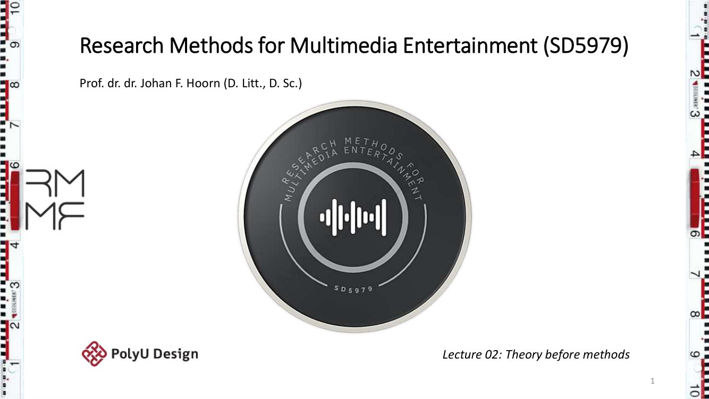
多媒体娱乐研究方法（SD5979）
Prof. dr. dr. Johan F. Hoorn (D. Litt., D. Sc.)
第 02 讲：理论先于方法（Theory before methods）
英文检索原文（公式与版式请看左侧原图）
Research Methods for Multimedia Entertainment (SD5979) Prof. dr. dr. Johan F. Hoorn (D. Litt., D. Sc.) Lecture 02: Theory before methods 1

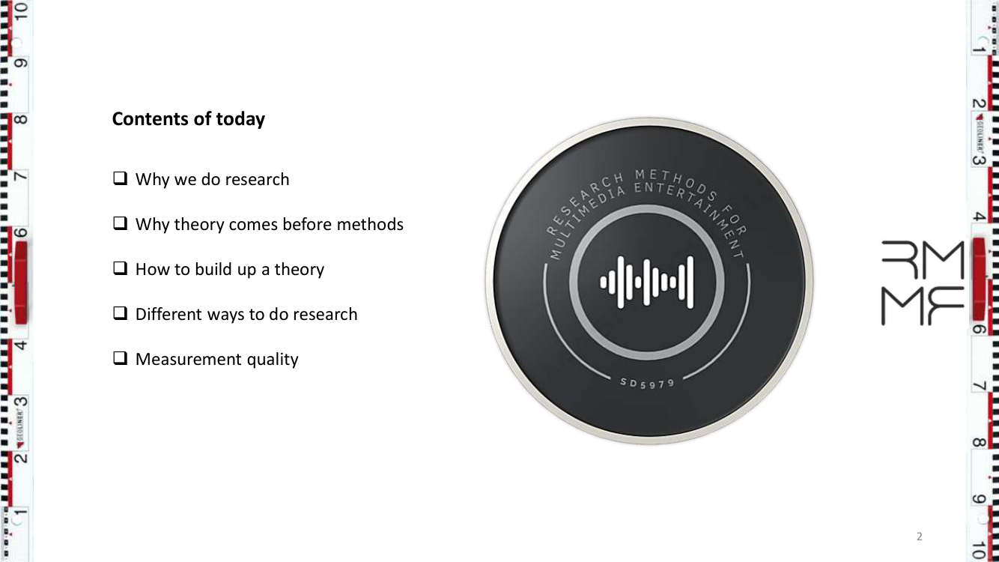
今日内容
- 我们为什么做研究（research）
- 为什么理论（theory）先于方法（methods）
- 如何建构理论（theory）
- 做研究（research）的不同方式
- 测量质量（Measurement quality）
英文检索原文（公式与版式请看左侧原图）
2 Contents of today Why we do research Why theory comes before methods How to build up a theory Different ways to do research Measurement quality

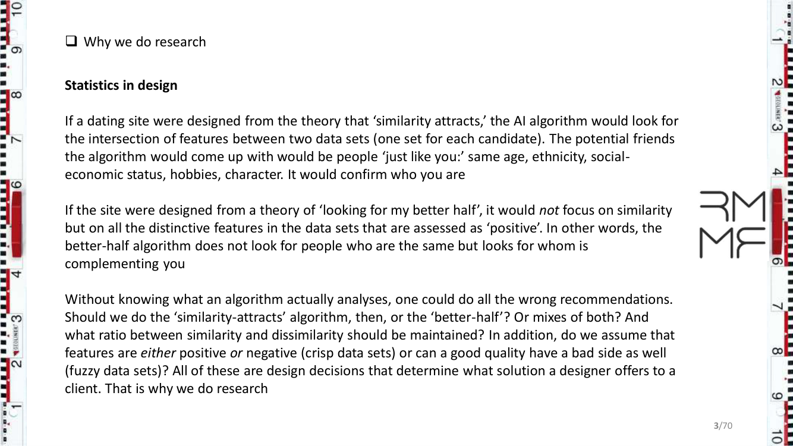
设计中的统计学（Statistics）
如果一个交友网站是基于「物以类聚（similarity attracts）」这一理论（theory）来设计的，那么人工智能算法（algorithm）就会在两个数据集（data sets）（每位候选人各对应一个集合）之间寻找特征（features）的交集。该算法（algorithm）推荐出来的潜在好友就会是「和你一模一样的人」：相同的年龄、族裔、社会经济地位、爱好和性格。它会不断印证你原本的样子。
如果该网站是基于「寻找我的另一半（looking for my better half）」这一理论（theory）来设计的，它就不会关注相似性，而是关注数据集（data sets）中所有被评估为「正面」的独特特征（features）。换句话说，「另一半」算法（algorithm）寻找的不是与你相同的人，而是能够与你互补的人。
如果不了解一个算法（algorithm）究竟在分析什么，人就可能会做出完全错误的推荐。那么，我们究竟应该采用「相似吸引」算法（algorithm），还是「另一半」算法（algorithm）？抑或将两者结合？相似性与相异性之间又应该维持怎样的比例？此外，我们是假定特征（features）非正即负（清晰数据集（crisp data sets）），还是认为一个好特质也可能有不好的一面（模糊数据集（fuzzy data sets））？所有这些都是设计决策，决定了设计师最终向客户提供的解决方案。这就是我们为什么要做研究（research）。
- 我们为什么做研究（research）
英文检索原文（公式与版式请看左侧原图）
Statistics in design If a dating site were designed from the theory that ‘similarity attracts,’ the AI algorithm would look for the intersection of features between two data sets (one set for each candidate). The potential friends the algorithm would come up with would be people ‘just like you:’ same age, ethnicity, social- economic status, hobbies, character. It would confirm who you are If the site were designed from a theory of ‘looking for my better half’, it would not focus on similarity but on all the distinctive features in the data sets that are assessed as ‘positive’. In other words, the better-half algorithm does not look for people who are the same but looks for whom is complementing you Without knowing what an algorithm actually analyses, one could do all the wrong recommendations. Should we do the ‘similarity-attracts’ algorithm, then, or the ‘better-half’? Or mixes of both? And what ratio between similarity and dissimilarity should be maintained? In addition, do we assume that features are either positive or negative (crisp data sets) or can a good quality have a bad side as well (fuzzy data sets)? All of these are design decisions that determine what solution a designer offers to a client. That is why we do research Why we do research 3/70

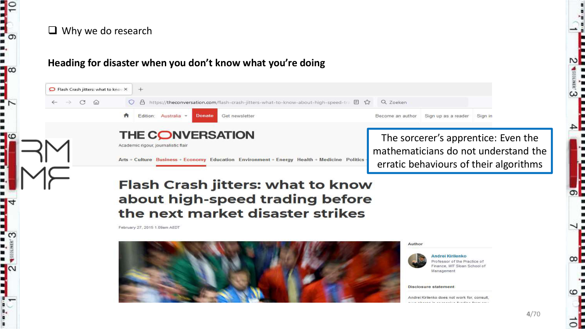
当你不知道自己在做什么时，就离灾难不远了
- 我们为什么做研究（research）
魔法师的学徒：就连数学家也无法理解他们自己的算法（algorithms）那些反复无常的行为。
英文检索原文（公式与版式请看左侧原图）
Heading for disaster when you don’t know what you’re doing Why we do research The sorcerer’s apprentice: Even the mathematicians do not understand the erratic behaviours of their algorithms 4/70

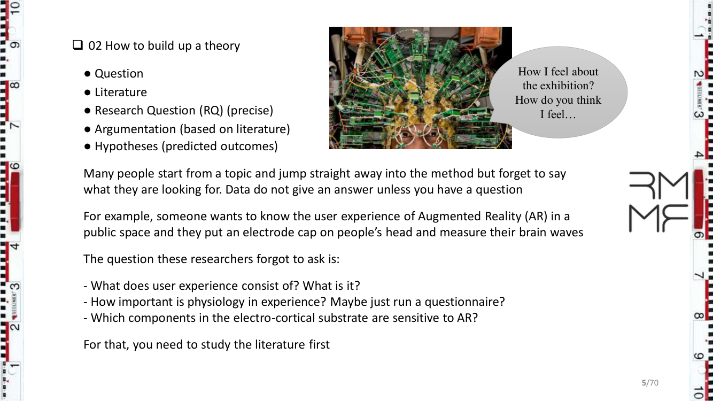
02 如何建构理论（theory）
很多人从一个主题出发，直接就跳进方法（method）阶段，却忘了说明自己到底在寻找什么。除非你先有一个问题，否则数据（Data）不会自己给出答案。
例如，有人想了解公共空间中增强现实（AR）的用户体验（user experience），于是就给人们戴上电极帽并测量他们的脑电波。
这些研究者忘记去问的问题是：
- 用户体验（user experience）由什么构成？它究竟是什么？
- 生理指标（physiology）在体验中有多重要？也许只需要做一份问卷（questionnaire）就够了？
- 电皮层基质（electro-cortical substrate）中的哪些成分对 AR 敏感？
为此，你需要先研读文献（literature）。
（插图对话）
- 「我对这个展览感觉如何？」
- 「你觉得我感觉怎样……」
- 问题（Question）
- 文献（Literature）
- 研究问题（Research Question, RQ）（精确）
- 论证（Argumentation）（基于文献（literature））
- 假设（Hypotheses）（预测的结果）
英文检索原文（公式与版式请看左侧原图）
02 How to build up a theory 5/70 Many people start from a topic and jump straight away into the method but forget to say what they are looking for. Data do not give an answer unless you have a question For example, someone wants to know the user experience of Augmented Reality (AR) in a public space and they put an electrode cap on people’s head and measure their brain waves The question these researchers forgot to ask is: - What does user experience consist of? What is it? - How important is physiology in experience? Maybe just run a questionnaire? - Which components in the electro-cortical substrate are sensitive to AR? For that, you need to study the literature first How I feel about the exhibition? How do you think I feel… ●Question ●Literature ●Research Question (RQ) (precise) ●Argumentation (based on literature) ●Hypotheses (predicted outcomes)

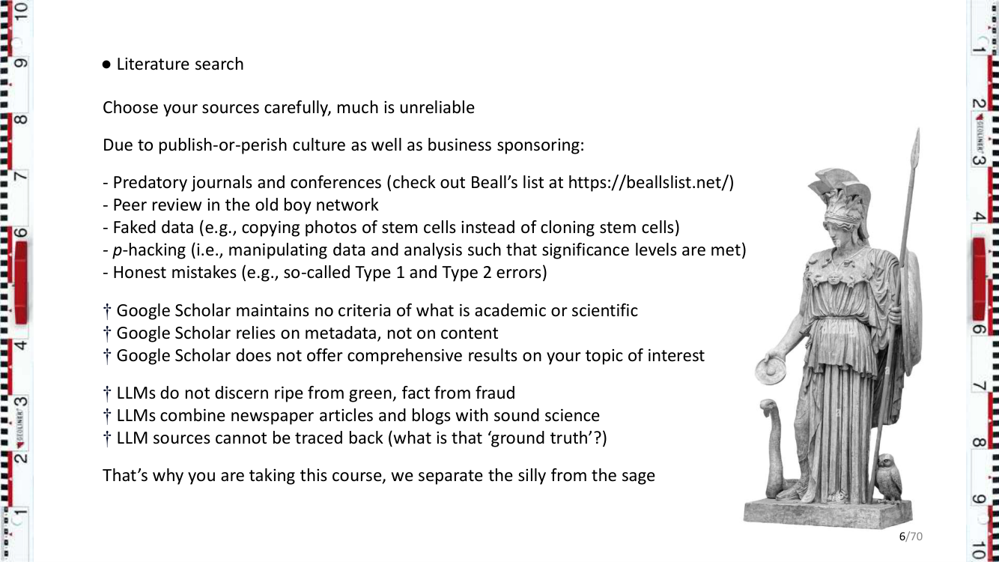
文献检索（Literature search）
请谨慎选择你的信息来源，很多来源并不可靠。
由于「不发表就出局（publish-or-perish）」的学术文化以及商业赞助的影响，存在以下问题：
- 掠夺性期刊（Predatory journals）与学术会议（可查看 Beall’s list：https://beallslist.net/）
- 「老男孩关系网（old boy network）」圈子内的同行评审（Peer review）
- 造假数据（Faked data）（例如，直接复制干细胞照片而不是真正克隆干细胞）
- p 值操纵（p-hacking）（即操控数据（data）与分析过程，以强行达到显著性水平（significance levels））
- 无心之失（例如所谓的I 类和 II 类错误（Type 1 and Type 2 errors））
- Google Scholar 并不设定何为学术性或科学性的筛选标准
- Google Scholar 依赖的是元数据（metadata），而非文献内容本身
- Google Scholar 无法针对你感兴趣的主题提供全面完整的检索结果
- 大语言模型（LLMs）无法分辨成熟与稚嫩、事实与欺诈
- 大语言模型（LLMs）会把报纸文章、博客与严谨的科学混为一谈
- 大语言模型（LLMs）的来源无法追溯（所谓的「基准真相（ground truth）」究竟是什么？）
这正是你修读本课程的原因：我们将去伪存真，辨别愚妄与真知。
英文检索原文（公式与版式请看左侧原图）
●Literature search Choose your sources carefully, much is unreliable Due to publish-or-perish culture as well as business sponsoring: - Predatory journals and conferences (check out Beall’s list at https://beallslist.net/) - Peer review in the old boy network - Faked data (e.g., copying photos of stem cells instead of cloning stem cells) - p-hacking (i.e., manipulating data and analysis such that significance levels are met) - Honest mistakes (e.g., so-called Type 1 and Type 2 errors) † Google Scholar maintains no criteria of what is academic or scientific † Google Scholar relies on metadata, not on content † Google Scholar does not offer comprehensive results on your topic of interest † LLMs do not discern ripe from green, fact from fraud † LLMs combine newspaper articles and blogs with sound science † LLM sources cannot be traced back (what is that ‘ground truth’?) That’s why you are taking this course, we separate the silly from the sage 6/70

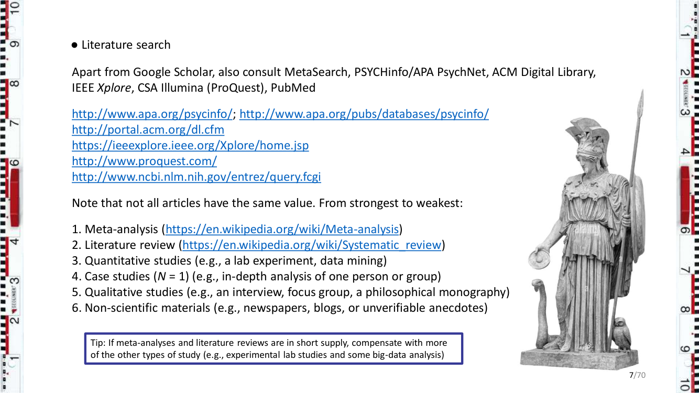
文献检索（Literature search）
除了 Google Scholar 之外，还应当查阅 MetaSearch、PSYCHinfo/APA PsychNet、ACM Digital Library、IEEE Xplore、CSA Illumina (ProQuest)、PubMed：
- http://www.apa.org/psycinfo/ ； http://www.apa.org/pubs/databases/psycinfo/
- http://portal.acm.org/dl.cfm
- https://ieeexplore.ieee.org/Xplore/home.jsp
- http://www.proquest.com/
- http://www.ncbi.nlm.nih.gov/entrez/query.fcgi
请注意，并非所有文章都具有同等的价值。按证据效力从强到弱排序如下：
- 元分析（Meta-analysis）（https://en.wikipedia.org/wiki/Meta-analysis）
- 文献综述（Literature review）（https://en.wikipedia.org/wiki/Systematic_review）
- 量化研究（Quantitative studies）（例如：实验室实验（lab experiment）、数据挖掘（data mining））
- 个案研究（Case studies (N = 1)）（例如：对某一个人或某一个群体的深入分析）
- 质性研究（Qualitative studies）（例如：访谈（interview）、焦点小组（focus group）、哲学专著）
- 非科学材料（例如：报纸、博客或无法验证的轶事）
提示（Tip）：如果元分析（meta-analyses）和文献综述（literature reviews）较为稀缺，可以通过增加其他类型的研究（例如实验性实验室研究（experimental lab studies）以及一些大数据分析（big-data analysis））来加以弥补。
英文检索原文（公式与版式请看左侧原图）
●Literature search Apart from Google Scholar, also consult MetaSearch, PSYCHinfo/APA PsychNet, ACM Digital Library, IEEE Xplore, CSA Illumina (ProQuest), PubMed http://www.apa.org/psycinfo/; http://www.apa.org/pubs/databases/psycinfo/ http://portal.acm.org/dl.cfm https://ieeexplore.ieee.org/Xplore/home.jsp http://www.proquest.com/ http://www.ncbi.nlm.nih.gov/entrez/query.fcgi Note that not all articles have the same value. From strongest to weakest: 1. Meta-analysis (https://en.wikipedia.org/wiki/Meta-analysis) 2. Literature review (https://en.wikipedia.org/wiki/Systematic_review) 3. Quantitative studies (e.g., a lab experiment, data mining) 4. Case studies (N = 1) (e.g., in-depth analysis of one person or group) 5. Qualitative studies (e.g., an interview, focus group, a philosophical monography) 6. Non-scientific materials (e.g., newspapers, blogs, or unverifiable anecdotes) Tip: If meta-analyses and literature reviews are in short supply, compensate with more of the other types of study (e.g., experimental lab studies and some big-data analysis) 7/70

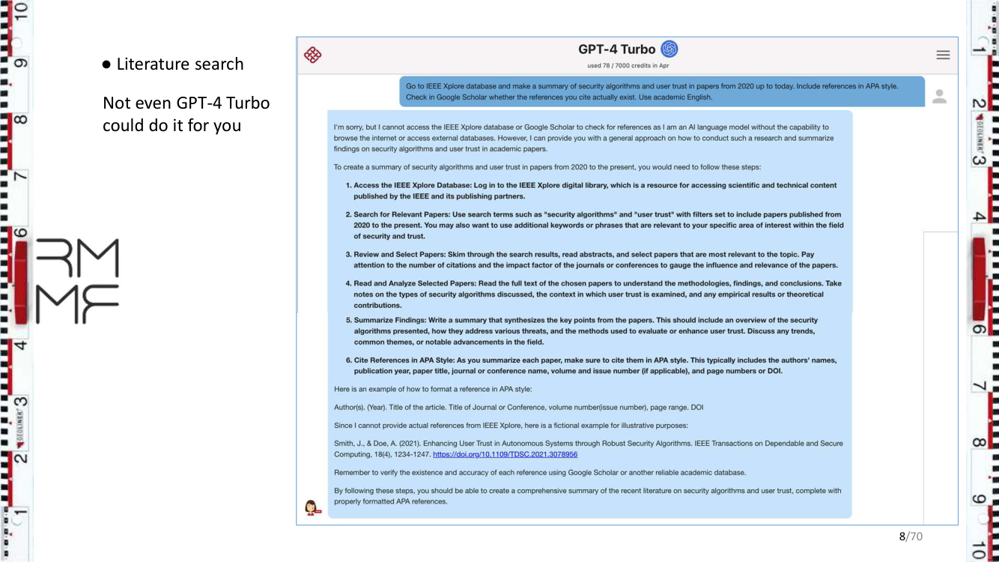
文献检索（Literature search）
就连 GPT-4 Turbo 也无法替你完成这项工作。
英文检索原文（公式与版式请看左侧原图）
●Literature search Not even GPT-4 Turbo could do it for you 8/70

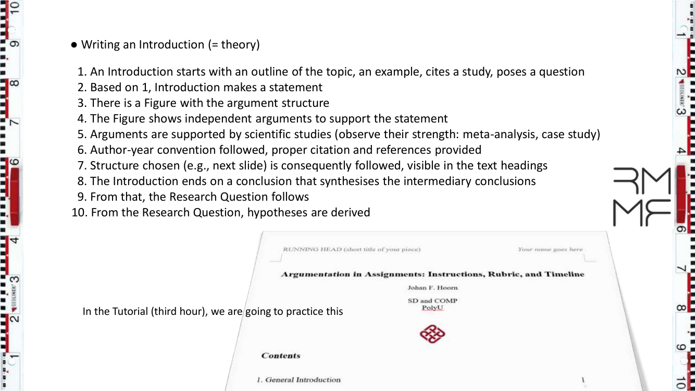
撰写引言（Introduction）（= 理论（theory））
- 引言（Introduction）以主题概述、一个实例开篇，引用一项研究，并提出一个问题
- 基于第 1 步，引言（Introduction）提出一项核心论点（statement）
- 附有一张展示论证结构（argument structure）的图示
- 该图示呈现用于支持该核心论点（statement）的多个独立论据（independent arguments）
- 各论据（Arguments）均有科学研究（scientific studies）予以支持（注意其证据效力：元分析（meta-analysis）、个案研究（case study））
- 遵循作者—年份引用规范（Author-year convention），并提供规范的文内引用（citation）与参考文献（references）
- 始终如一地遵循所选定的结构（例如下一页所示），并在正文各级标题中清晰体现
- 引言（Introduction）以一项综合各阶段性中间结论的总结收尾
- 由此得出研究问题（Research Question）
- 再从研究问题（Research Question）推导出假设（hypotheses）
在辅导课（第三学时）中，我们将对此进行实际演练。
英文检索原文（公式与版式请看左侧原图）
●Writing an Introduction (= theory) 1. An Introduction starts with an outline of the topic, an example, cites a study, poses a question 2. Based on 1, Introduction makes a statement 3. There is a Figure with the argument structure 4. The Figure shows independent arguments to support the statement 5. Arguments are supported by scientific studies (observe their strength: meta-analysis, case study) 6. Author-year convention followed, proper citation and references provided 7. Structure chosen (e.g., next slide) is consequently followed, visible in the text headings 8. The Introduction ends on a conclusion that synthesises the intermediary conclusions 9. From that, the Research Question follows 10. From the Research Question, hypotheses are derived In the Tutorial (third hour), we are going to practice this

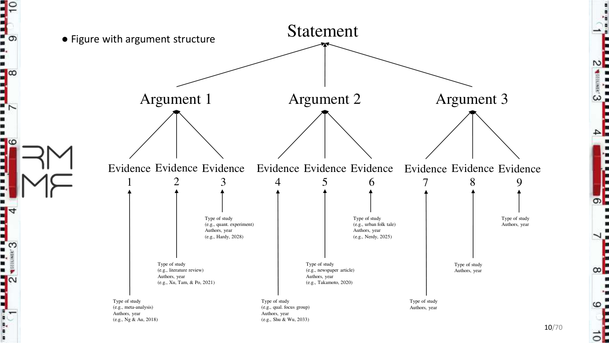
论证结构（argument structure）图示
- 核心论点（Statement）
- 论据（Argument） 1
- 证据（Evidence） 1：研究类型（Type of study）（例如：元分析（meta-analysis））｜作者，年份（例如：Ng & Au, 2018）
- 证据（Evidence） 2：研究类型（Type of study）（例如：文献综述（literature review））｜作者，年份（例如：Xu, Tam, & Po, 2021）
- 证据（Evidence） 3：研究类型（Type of study）（例如：量化实验（quant. experiment））｜作者，年份（例如：Hardy, 2028）
- 论据（Argument） 2
- 证据（Evidence） 4：研究类型（Type of study）（例如：质性焦点小组（qual. focus group））｜作者，年份（例如：Shu & Wu, 2033）
- 证据（Evidence） 5：研究类型（Type of study）（例如：报纸文章，newspaper article）｜作者，年份（例如：Takamoto, 2020）
- 证据（Evidence） 6：研究类型（Type of study）（例如：都市民间传说，urban folk tale）｜作者，年份（例如：Nerdy, 2025）
- 论据（Argument） 3
- 证据（Evidence） 7：研究类型（Type of study）｜作者，年份（Authors, year）
- 证据（Evidence） 8：研究类型（Type of study）｜作者，年份（Authors, year）
- 证据（Evidence） 9：研究类型（Type of study）｜作者，年份（Authors, year）
英文检索原文（公式与版式请看左侧原图）
Statement Argument 2 Argument 1 Argument 3 Evidence 5 Evidence 6 Evidence 4 Evidence 8 Evidence 9 Evidence 7 Evidence 2 Evidence 3 Evidence 1 Type of study (e.g., meta-analysis) Authors, year (e.g., Ng & Au, 2018) Type of study (e.g., literature review) Authors, year (e.g., Xu, Tam, & Po, 2021) Type of study (e.g., quant. experiment) Authors, year (e.g., Hardy, 2028) Type of study (e.g., qual. focus group) Authors, year (e.g., Shu & Wu, 2033) Type of study (e.g., newspaper article) Authors, year (e.g., Takamoto, 2020) Type of study (e.g., urban folk tale) Authors, year (e.g., Nerdy, 2025) Type of study Authors, year Type of study Authors, year Type of study Authors, year ●Figure with argument structure 10/70

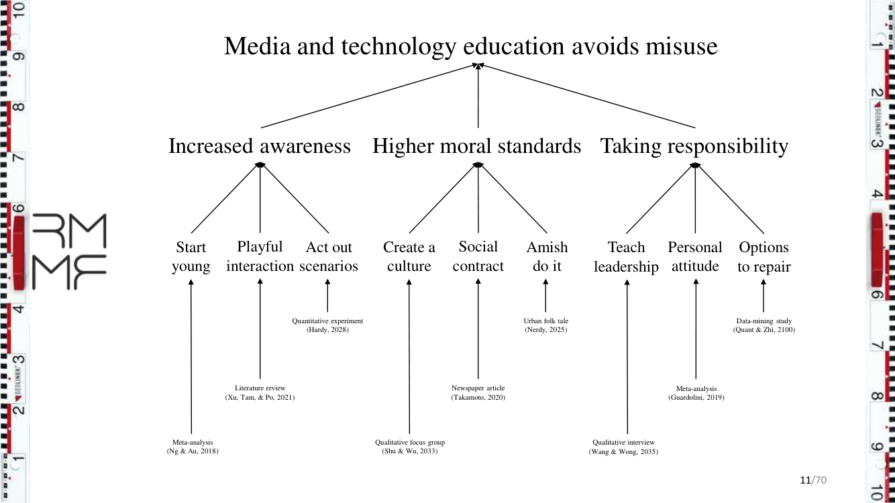
媒体与技术教育可以避免滥用
- 更高的道德标准
- 社会契约 — 元分析（Meta-analysis）（Ng & Au, 2018）
- 阿米什人就是这么做的 — 文献综述（Literature review）（Xu, Tam, & Po, 2021）
- 营造一种文化 — 量化实验（Quantitative experiment）（Hardy, 2028）
- 提高意识
- 个人态度 — 质性焦点小组（Qualitative focus group）（Shu & Wu, 2033）
- 修复的选项 — 报纸文章（Takamoto, 2020）
- 教授领导力 — 都市民间传说（Nerdy, 2025）
- 承担责任
- 趣味互动 — 质性访谈（Qualitative interview）（Wang & Wong, 2035）
- 情景演练 — 元分析（Meta-analysis）（Guardolini, 2019）
- 从小开始 — 数据挖掘研究（Data-mining study）（Quant & Zhì, 2100）
英文检索原文（公式与版式请看左侧原图）
Media and technology education avoids misuse Higher moral standards Increased awareness Taking responsibility Social contract Amish do it Create a culture Personal attitude Options to repair Teach leadership Playful interaction Act out scenarios Start young Meta-analysis (Ng & Au, 2018) Literature review (Xu, Tam, & Po, 2021) Quantitative experiment (Hardy, 2028) Qualitative focus group (Shu & Wu, 2033) Newspaper article (Takamoto, 2020) Urban folk tale (Nerdy, 2025) Qualitative interview (Wang & Wong, 2035) Meta-analysis (Guardolini, 2019) Data-mining study (Quant & Zhì, 2100) 11/70

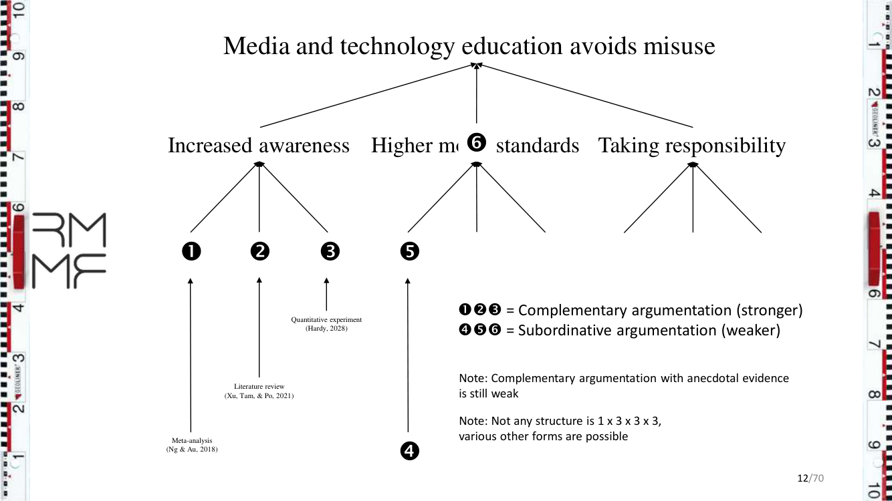
媒体与技术教育可以避免滥用（论证结构）
- 更高的道德标准 — 元分析（Meta-analysis）（Ng & Au, 2018）
- 提高意识 — 文献综述（Literature review）（Xu, Tam, & Po, 2021）
- 承担责任 — 量化实验（Quantitative experiment）（Hardy, 2028）
图示说明：
- = 互补论证（Complementary argumentation）（更强）
- = 从属论证（Subordinative argumentation）（较弱）
注（Note）：使用轶事证据（anecdotal evidence）的互补论证（Complementary argumentation）依然较弱
注（Note）：并非所有结构都是 1 × 3 × 3 × 3，各种其他形式都是可能的
英文检索原文（公式与版式请看左侧原图）
Media and technology education avoids misuse Higher moral standards Increased awareness Taking responsibility Meta-analysis (Ng & Au, 2018) Literature review (Xu, Tam, & Po, 2021) Quantitative experiment (Hardy, 2028) = Complementary argumentation (stronger) = Subordinative argumentation (weaker) Note: Complementary argumentation with anecdotal evidence is still weak Note: Not any structure is 1 x 3 x 3 x 3, various other forms are possible 12/70

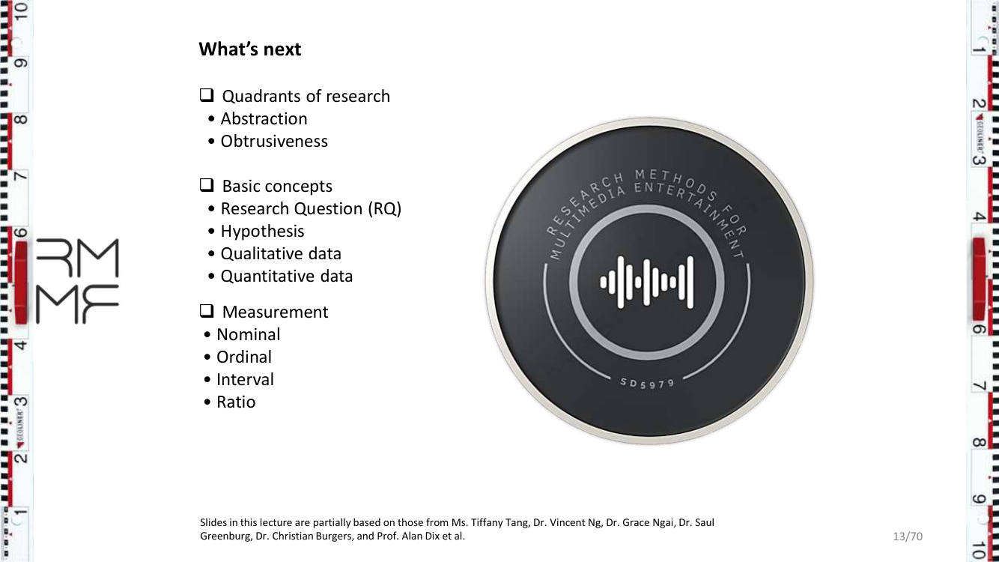
接下来讲什么
- 研究象限（Quadrants of research）
- 抽象性（Abstraction）
- 干预性（Obtrusiveness）
- 基本概念
- 研究问题（Research Question, RQ）
- 假设（Hypothesis）
- 质性数据（Qualitative data）
- 量化数据（Quantitative data）
- 测量（Measurement）
- 定类（Nominal）
- 定序（Ordinal）
- 定距（Interval）
- 定比（Ratio）
本讲幻灯片部分基于 Ms. Tiffany Tang、Dr. Vincent Ng、Dr. Grace Ngai、Dr. Saul Greenburg、Dr. Christian Burgers 以及 Prof. Alan Dix 等人的讲义内容。
英文检索原文（公式与版式请看左侧原图）
What’s next 13/70 Quadrants of research • Abstraction • Obtrusiveness Basic concepts • Research Question (RQ) • Hypothesis • Qualitative data • Quantitative data Measurement • Nominal • Ordinal • Interval • Ratio Slides in this lecture are partially based on those from Ms. Tiffany Tang, Dr. Vincent Ng, Dr. Grace Ngai, Dr. Saul Greenburg, Dr. Christian Burgers, and Prof. Alan Dix et al.

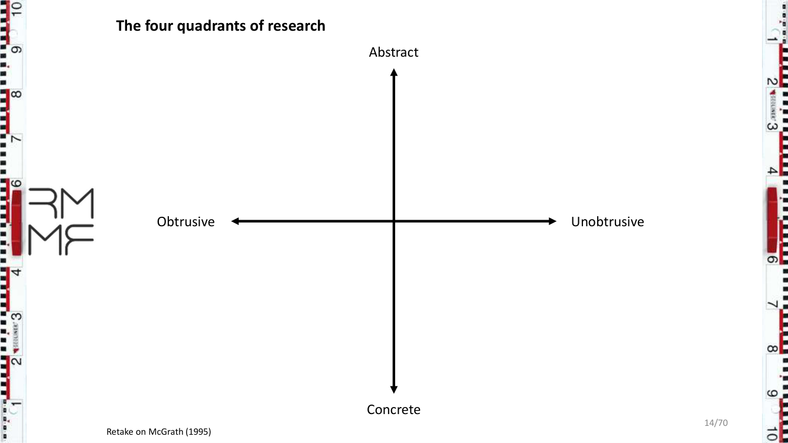
研究的四个象限（The four quadrants of research）
- 纵轴：抽象（Abstract） ↔ 具体（Concrete）
- 横轴：干预性（Obtrusive） ↔ 非干预性（Unobtrusive）
改编自 McGrath (1995)
英文检索原文（公式与版式请看左侧原图）
14/70 The four quadrants of research Abstract Concrete Obtrusive Unobtrusive Retake on McGrath (1995)

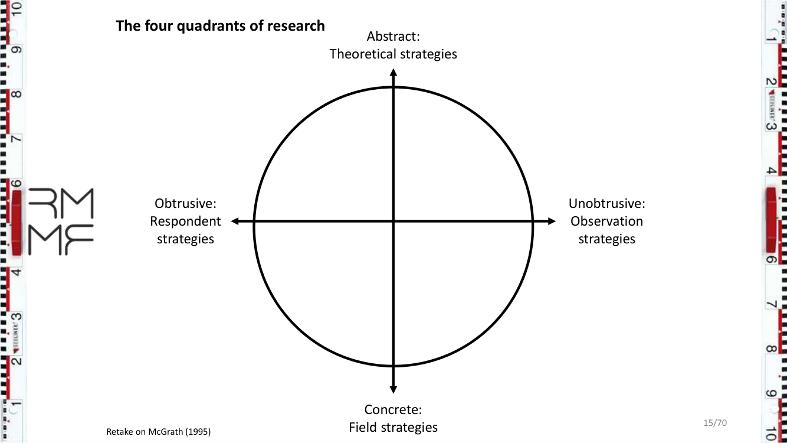
研究的四个象限（The four quadrants of research）
- 具体（Concrete）：实地策略（Field strategies）
- 抽象（Abstract）：理论策略（Theoretical strategies）
- 干预性（Obtrusive）：受访者策略（Respondent strategies）
- 非干预性（Unobtrusive）：观察策略（Observation strategies）
改编自 McGrath (1995)
英文检索原文（公式与版式请看左侧原图）
15/70 The four quadrants of research Concrete: Field strategies Obtrusive: Respondent strategies Abstract: Theoretical strategies Unobtrusive: Observation strategies Retake on McGrath (1995)

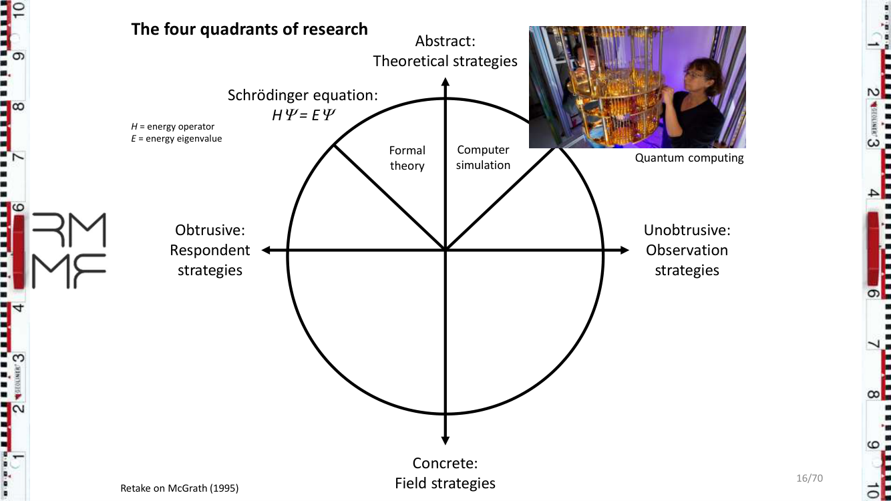
研究的四个象限（The four quadrants of research）
- 具体（Concrete）：实地策略（Field strategies）
- 抽象（Abstract）：理论策略（Theoretical strategies）
- 干预性（Obtrusive）：受访者策略（Respondent strategies）
- 非干预性（Unobtrusive）：观察策略（Observation strategies）
象限内容（抽象 × 非干预性）：
- 形式理论（Formal theory）
- 薛定谔方程：
H = E H= 能量算符（energy operator）E= 能量本征值（energy eigenvalue）
- 薛定谔方程：
- 计算机模拟（Computer simulation）
- 量子计算
改编自 McGrath (1995)
英文检索原文（公式与版式请看左侧原图）
16/70 The four quadrants of research Concrete: Field strategies Abstract: Theoretical strategies Formal theory Computer simulation Obtrusive: Respondent strategies Unobtrusive: Observation strategies Schrödinger equation: H= E Quantum computing H = energy operator E = energy eigenvalue Retake on McGrath (1995)

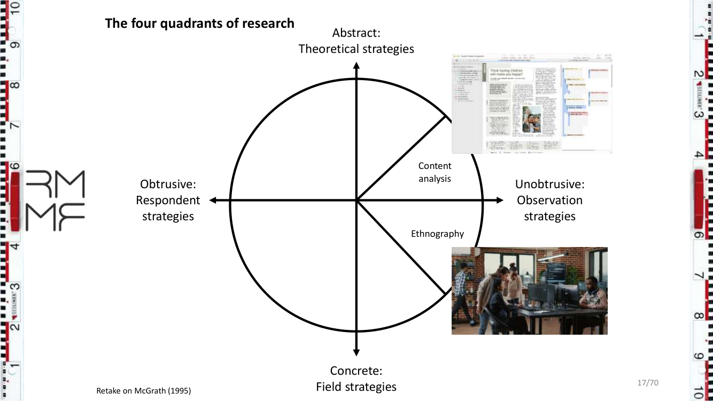
研究的四个象限（The four quadrants of research）
- 具体（Concrete）：实地策略（Field strategies）
- 抽象（Abstract）：理论策略（Theoretical strategies）
- 干预性（Obtrusive）：受访者策略（Respondent strategies）
- 非干预性（Unobtrusive）：观察策略（Observation strategies）
象限内容（具体 × 非干预性）：
- 内容分析（Content analysis）
- 民族志（Ethnography）
改编自 McGrath (1995)
英文检索原文（公式与版式请看左侧原图）
17/70 The four quadrants of research Concrete: Field strategies Abstract: Theoretical strategies Content analysis Obtrusive: Respondent strategies Unobtrusive: Observation strategies Ethnography Retake on McGrath (1995)

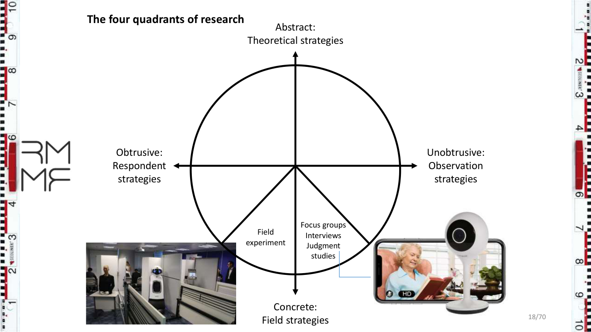
研究的四个象限（The four quadrants of research）
- 具体（Concrete）：实地策略（Field strategies）
- 抽象（Abstract）：理论策略（Theoretical strategies）
- 干预性（Obtrusive）：受访者策略（Respondent strategies）
- 非干预性（Unobtrusive）：观察策略（Observation strategies）
象限内容（具体 × 干预性）：
- 实地实验（Field experiment）
- 焦点小组（Focus groups）
- 访谈（Interviews）
- 判断研究（Judgment studies）
英文检索原文（公式与版式请看左侧原图）
18/70 The four quadrants of research Concrete: Field strategies Abstract: Theoretical strategies Field experiment Focus groups Interviews Judgment studies Obtrusive: Respondent strategies Unobtrusive: Observation strategies

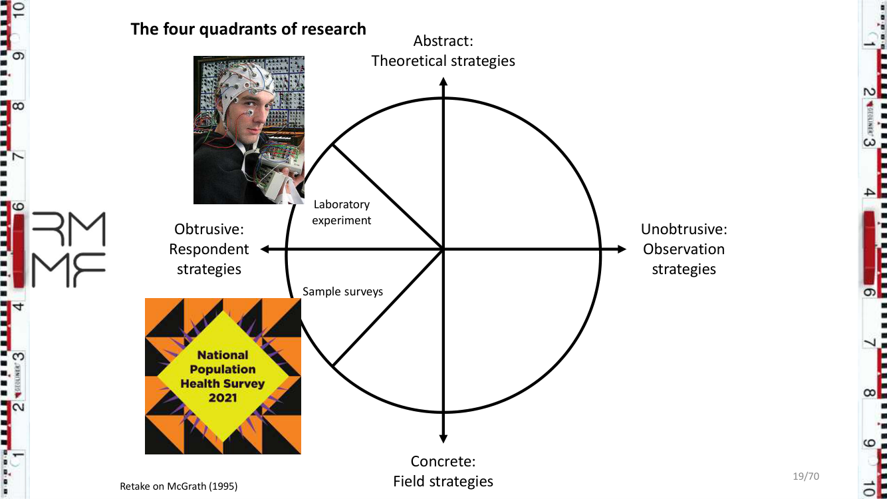
研究的四个象限（The four quadrants of research）
- 具体（Concrete）：实地策略（Field strategies）
- 抽象（Abstract）：理论策略（Theoretical strategies）
- 干预性（Obtrusive）：受访者策略（Respondent strategies）
- 非干预性（Unobtrusive）：观察策略（Observation strategies）
象限内容（抽象 × 干预性）：
- 实验室实验（Laboratory experiment）
- 抽样调查（Sample surveys）
改编自 McGrath (1995)
英文检索原文（公式与版式请看左侧原图）
19/70 The four quadrants of research Concrete: Field strategies Abstract: Theoretical strategies Laboratory experiment Sample surveys Obtrusive: Respondent strategies Unobtrusive: Observation strategies Retake on McGrath (1995)

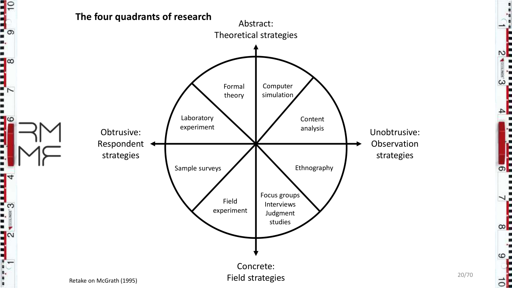
研究的四个象限（The four quadrants of research）
- 具体（Concrete）：实地策略（Field strategies）
- 抽象（Abstract）：理论策略（Theoretical strategies）
- 干预性（Obtrusive）：受访者策略（Respondent strategies）
- 非干预性（Unobtrusive）：观察策略（Observation strategies）
四个象限分布：
- 抽象（Abstract） × 非干预性（Unobtrusive）：形式理论（Formal theory）、计算机模拟（Computer simulation）
- 具体（Concrete） × 非干预性（Unobtrusive）：民族志（Ethnography）、内容分析（Content analysis）
- 具体（Concrete） × 干预性（Obtrusive）：实地实验（Field experiment）、焦点小组（Focus groups）、访谈（Interviews）、判断研究（Judgment studies）
- 抽象（Abstract） × 干预性（Obtrusive）：实验室实验（Laboratory experiment）、抽样调查（Sample surveys）
改编自 McGrath (1995)
英文检索原文（公式与版式请看左侧原图）
20/70 The four quadrants of research Concrete: Field strategies Abstract: Theoretical strategies Laboratory experiment Sample surveys Obtrusive: Respondent strategies Unobtrusive: Observation strategies Formal theory Computer simulation Ethnography Content analysis Field experiment Focus groups Interviews Judgment studies Retake on McGrath (1995)

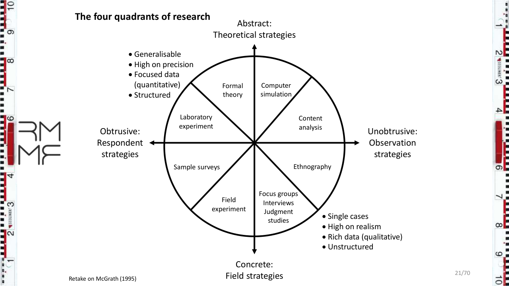
研究的四个象限（The four quadrants of research）
- 具体（Concrete）：实地策略（Field strategies）
- 抽象（Abstract）：理论策略（Theoretical strategies）
- 干预性（Obtrusive）：受访者策略（Respondent strategies）
- 非干预性（Unobtrusive）：观察策略（Observation strategies）
四个象限分布：
- 抽象（Abstract） × 非干预性（Unobtrusive）：形式理论（Formal theory）、计算机模拟（Computer simulation）
- 具体（Concrete） × 非干预性（Unobtrusive）：民族志（Ethnography）、内容分析（Content analysis）
- 具体（Concrete） × 干预性（Obtrusive）：实地实验（Field experiment）、焦点小组（Focus groups）、访谈（Interviews）、判断研究（Judgment studies）
- 抽象（Abstract） × 干预性（Obtrusive）：实验室实验（Laboratory experiment）、抽样调查（Sample surveys）
特征对比：
- 左下象限特征（具体（Concrete）／非干预性（Unobtrusive））：
- 个案（Single cases）
- 高现实性（High on realism）
- 丰富数据（Rich data）（质性（qualitative））
- 非结构化（Unstructured）
- 右上象限特征（抽象（Abstract）／干预性（Obtrusive））：
- 可泛化（Generalisable）
- 高精度（High on precision）
- 聚焦数据（Focused data）（量化（quantitative））
- 结构化（Structured）
改编自 McGrath (1995)
英文检索原文（公式与版式请看左侧原图）
21/70 The four quadrants of research Concrete: Field strategies Abstract: Theoretical strategies Laboratory experiment Sample surveys Obtrusive: Respondent strategies Unobtrusive: Observation strategies Formal theory Computer simulation Ethnography Content analysis Field experiment Focus groups Interviews Judgment studies Single cases High on realism Rich data (qualitative) Unstructured Generalisable High on precision Focused data (quantitative) Structured Retake on McGrath (1995)

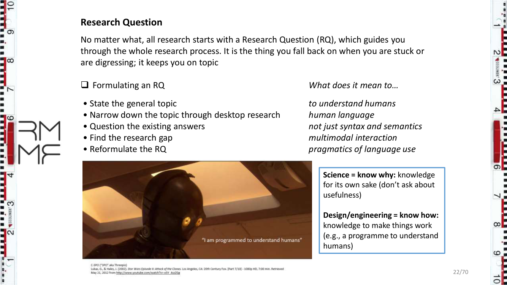
研究问题（Research Question）
无论如何，所有研究都始于一个研究问题（Research Question, RQ），它贯穿并引导你的整个研究过程。当你卡住或偏离主题时，它是你可以回归的依据；它能让你紧扣主题。
- 拟定研究问题（RQ）（这意味着什么……）
- 陈述宽泛的主题 — 去理解人类
- 通过案头研究（desktop research）缩小主题范围 — 人类语言
- 质疑现有答案 — 不仅仅是句法学与语义学
- 寻找研究缺口（research gap） — 多模态交互
- 重新拟定研究问题（RQ） — 语言使用的语用学
- 科学（Science）= 知其所以然（know why）：为了知识本身而追求知识（不要问有没有用）
- 设计/工程（Design/engineering）= 知其如何实现（know how）：为了使事物运作而追求知识（例如，开发一个用于理解人类的程序）
英文检索原文（公式与版式请看左侧原图）
22/70 Research Question No matter what, all research starts with a Research Question (RQ), which guides you through the whole research process. It is the thing you fall back on when you are stuck or are digressing; it keeps you on topic Formulating an RQ What does it mean to… • State the general topic to understand humans • Narrow down the topic through desktop research human language • Question the existing answers not just syntax and semantics • Find the research gap multimodal interaction • Reformulate the RQ pragmatics of language use Science = know why: knowledge for its own sake (don’t ask about usefulness) Design/engineering = know how: knowledge to make things work (e.g., a programme to understand humans)

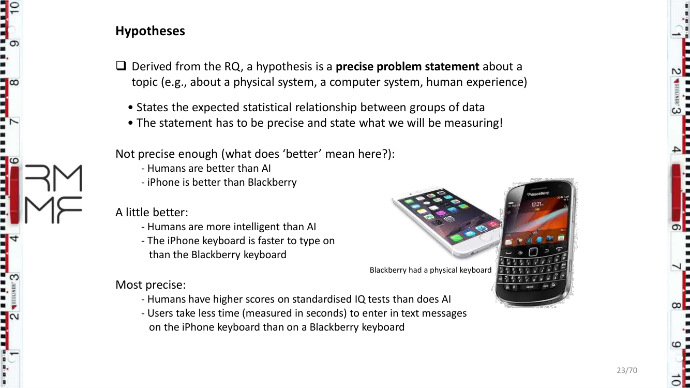
假设（Hypotheses）
- 从研究问题（RQ）衍生而来，假设（hypothesis）是关于某一主题（例如物理系统、计算机系统、人类体验）的精确问题陈述（problem statement）
- 说明各组数据之间预期的统计关系（statistical relationship）
- 该陈述必须足够精确，并说明我们将要测量（measuring）什么！
不够精确（这里的“更好”是什么意思？）：
- 人类比 AI 更好
- iPhone 比 Blackberry 更好
稍微好一点：
- 人类比 AI 更聪明
- 在 iPhone 键盘上打字比在 Blackberry 键盘上更快
最精确：
- 人类在标准化智商测试（standardised IQ tests）上的得分高于 AI
- 用户在 iPhone 键盘上输入短信所花的时间（以秒为单位测量）少于在 Blackberry 键盘上的用时（注：Blackberry 曾配有实体键盘）
英文检索原文（公式与版式请看左侧原图）
23/70 Hypotheses Derived from the RQ, a hypothesis is a precise problem statement about a topic (e.g., about a physical system, a computer system, human experience) • States the expected statistical relationship between groups of data • The statement has to be precise and state what we will be measuring! Not precise enough (what does ‘better’ mean here?): - Humans are better than AI - iPhone is better than Blackberry A little better: - Humans are more intelligent than AI - The iPhone keyboard is faster to type on than the Blackberry keyboard Most precise: - Humans have higher scores on standardised IQ tests than does AI - Users take less time (measured in seconds) to enter in text messages on the iPhone keyboard than on a Blackberry keyboard Blackberry had a physical keyboard

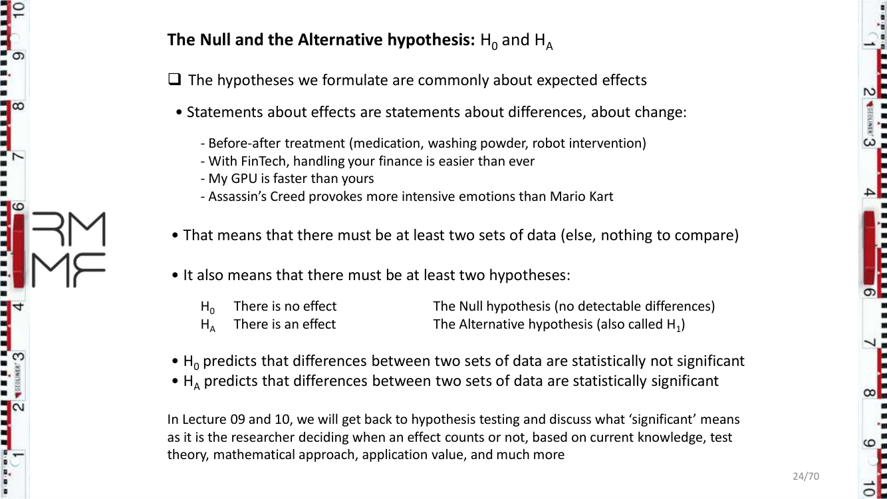
零假设（Null hypothesis）与备择假设（Alternative hypothesis）：H0 与 HA
- 我们拟定的假设（hypotheses）通常关乎预期的效应（effects）
- 关于效应（effects）的陈述就是关于差异、关于变化的陈述：
- 前后测处理（Before-after treatment）（药物、洗衣粉、机器人干预（intervention））
- 有了金融科技（FinTech），打理财务比以往任何时候都更容易
- 我的 GPU 比你的更快
- 《刺客信条》（Assassin’s Creed）比《马力欧卡丁车》（Mario Kart）激发更强烈的情绪
- 这意味着必须至少有两组数据（否则无从比较）
- 这也意味着必须至少有两个假设（hypotheses）：
- H0：不存在效应（effect） — 零假设（The Null hypothesis）（没有可检测到的差异）
- HA：存在效应（effect） — 备择假设（The Alternative hypothesis）（也称 H1）
- H0 预测两组数据之间的差异在统计学上不显著（statistically not significant）
- HA 预测两组数据之间的差异在统计学上显著（statistically significant）
在第 9 讲和第 10 讲中，我们将回到假设检验（hypothesis testing）并讨论“显著（significant）”意味着什么，因为是由研究者基于现有知识、检验理论（test theory）、数学方法、应用价值等诸多因素，来决定某个效应（effect）何时才算数。
英文检索原文（公式与版式请看左侧原图）
24/70 The Null and the Alternative hypothesis: H0 and HA The hypotheses we formulate are commonly about expected effects • Statements about effects are statements about differences, about change: - Before-after treatment (medication, washing powder, robot intervention) - With FinTech, handling your finance is easier than ever - My GPU is faster than yours - Assassin’s Creed provokes more intensive emotions than Mario Kart • That means that there must be at least two sets of data (else, nothing to compare) • It also means that there must be at least two hypotheses: H0 There is no effect The Null hypothesis (no detectable differences) HA There is an effect The Alternative hypothesis (also called H1) • H0 predicts that differences between two sets of data are statistically not significant • HA predicts that differences between two sets of data are statistically significant In Lecture 09 and 10, we will get back to hypothesis testing and discuss what ‘significant’ means as it is the researcher deciding when an effect counts or not, based on current knowledge, test theory, mathematical approach, application value, and much more

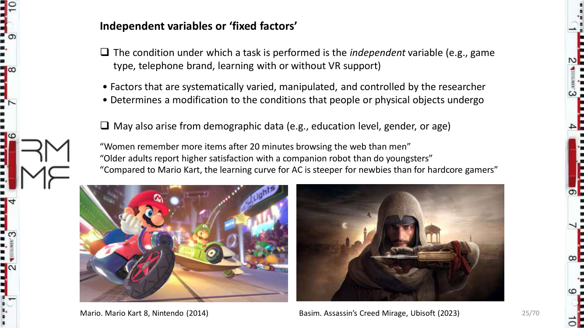
自变量（Independent variables）或「固定因子（fixed factors）」
- 执行任务所处的条件就是自变量（independent variable）（例如：游戏类型、电话品牌、有或没有 VR 支持下的学习）
- 由研究者系统性地改变、操纵（manipulated）并控制（controlled）的因子（Factors）
- 决定人们或物理对象所经历之条件的改变
- 也可能源自人口统计学数据（demographic data）（例如：教育水平、性别或年龄）
「女性在浏览网页 20 分钟后记住的项目比男性多」
「相比年轻人，老年人对陪伴机器人的满意度更高」
「与 Mario Kart 相比，AC 对新手而言的学习曲线（learning curve）比对硬核玩家更陡峭」
Basim. Assassin’s Creed Mirage, Ubisoft (2023)
Mario. Mario Kart 8, Nintendo (2014)
英文检索原文（公式与版式请看左侧原图）
25/70 Independent variables or ‘fixed factors’ The condition under which a task is performed is the independent variable (e.g., game type, telephone brand, learning with or without VR support) • Factors that are systematically varied, manipulated, and controlled by the researcher • Determines a modification to the conditions that people or physical objects undergo May also arise from demographic data (e.g., education level, gender, or age) “Women remember more items after 20 minutes browsing the web than men” “Older adults report higher satisfaction with a companion robot than do youngsters” “Compared to Mario Kart, the learning curve for AC is steeper for newbies than for hardcore gamers” Basim. Assassin’s Creed Mirage, Ubisoft (2023) Mario. Mario Kart 8, Nintendo (2014)

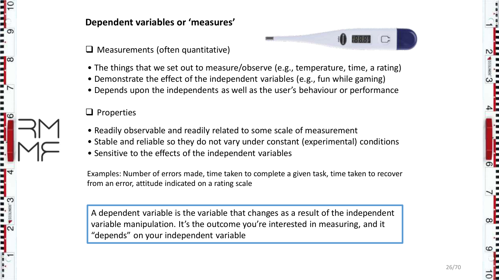
因变量（Dependent variables）或「测量指标（measures）」
- 测量（Measurements）（通常是定量（quantitative）的）
- 我们着手测量／观察的事物（例如：温度、时间、一项评分（rating））
- 展现自变量（independent variables）的效应（effect）（例如：游戏过程中的乐趣）
- 取决于自变量（independents）以及用户的行为或表现
- 性质
- 易于观察且易于关联到某种测量尺度（scale of measurement）
- 稳定且可靠（reliable），使其在恒定（实验（experimental））条件下不会发生变化
- 对自变量（independent variables）的效应（effects）具有敏感性（Sensitive）
示例：犯错次数、完成给定任务所需的时间、从错误中恢复所需的时间、在评分量表（rating scale）上表示的态度
因变量（dependent variable）是因自变量（independent variable）操纵（manipulation）而发生变化的变量。它是你感兴趣去测量的结果变量（outcome），并且它「取决于」你的自变量（independent variable）
英文检索原文（公式与版式请看左侧原图）
26/70 Dependent variables or ‘measures’ Measurements (often quantitative) • The things that we set out to measure/observe (e.g., temperature, time, a rating) • Demonstrate the effect of the independent variables (e.g., fun while gaming) • Depends upon the independents as well as the user’s behaviour or performance Properties • Readily observable and readily related to some scale of measurement • Stable and reliable so they do not vary under constant (experimental) conditions • Sensitive to the effects of the independent variables Examples: Number of errors made, time taken to complete a given task, time taken to recover from an error, attitude indicated on a rating scale A dependent variable is the variable that changes as a result of the independent variable manipulation. It’s the outcome you’re interested in measuring, and it “depends” on your independent variable

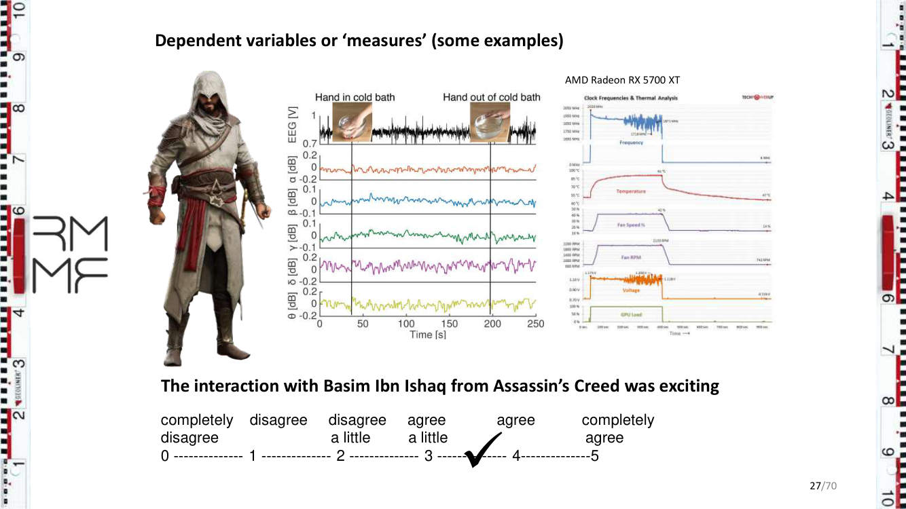
因变量（Dependent variables）或「测量指标（measures）」（一些示例）
0 完全不同意 —— 1 不同意 —— 2 有一点不同意 —— 3 有一点同意 —— 4 同意（✓） —— 5 完全同意
与 Assassin’s Creed 中的 Basim Ibn Ishaq 的互动令人兴奋
AMD Radeon RX 5700 XT
英文检索原文（公式与版式请看左侧原图）
Dependent variables or ‘measures’ (some examples) completely disagree disagree agree agree completely disagree a little a little agree 0 -------------- 1 -------------- 2 -------------- 3 -------------- 4--------------5 The interaction with Basim Ibn Ishaq from Assassin’s Creed was exciting AMD Radeon RX 5700 XT 27/70

因变量（Dependent variables）：质性（qualitative）
- 质性数据（Qualitative data）
- 书面网页评论
- 摄像画面
- 音频片段
- 观察记录规程（Observation protocols）
英文检索原文（公式与版式请看左侧原图）
28/70 Qualitative data – Written web reviews – Camera footage – Sound bites – Observation protocols Dependent variables: qualitative

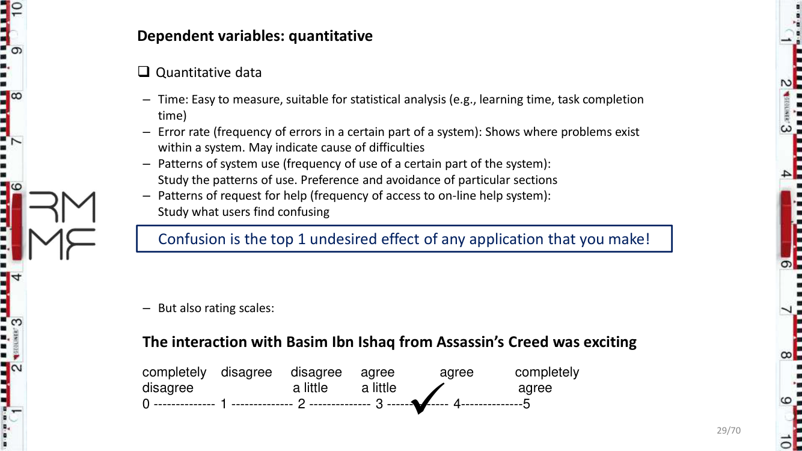
因变量（Dependent variables）：定量（quantitative）
- 定量数据（Quantitative data）
- 时间：易于测量，适合进行统计分析（statistical analysis）（例如：学习时间、任务完成时间（task completion time））
- 错误率（Error rate）（系统某一部分出现错误的频率（frequency））：显示系统内问题所在之处。可能指明困难的原因
- 系统使用模式（系统某一部分的使用频率（frequency））：研究使用模式。对特定板块的偏好与回避
- 求助模式（访问在线帮助系统的频率（frequency））：研究用户觉得困惑之处
- 但也包括评分量表（rating scales）：
困惑是你所开发的任何应用程序中最不希望出现的首要效应！
0 完全不同意 —— 1 不同意 —— 2 有一点不同意 —— 3 有一点同意 —— 4 同意（✓） —— 5 完全同意
与 Assassin’s Creed 中的 Basim Ibn Ishaq 的互动令人兴奋
英文检索原文（公式与版式请看左侧原图）
29/70 Quantitative data Dependent variables: quantitative – Time: Easy to measure, suitable for statistical analysis (e.g., learning time, task completion time) – Error rate (frequency of errors in a certain part of a system): Shows where problems exist within a system. May indicate cause of difficulties – Patterns of system use (frequency of use of a certain part of the system): Study the patterns of use. Preference and avoidance of particular sections – Patterns of request for help (frequency of access to on-line help system): Study what users find confusing – But also rating scales: Confusion is the top 1 undesired effect of any application that you make! completely disagree disagree agree agree completely disagree a little a little agree 0 -------------- 1 -------------- 2 -------------- 3 -------------- 4--------------5 The interaction with Basim Ibn Ishaq from Assassin’s Creed was exciting

英文检索原文（公式与版式请看左侧原图）
Break

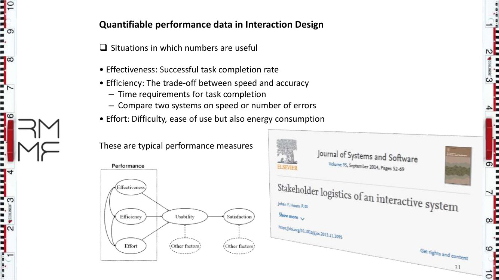
交互设计中可量化（Quantifiable）的绩效数据（performance data）
- 数字有用的情境
- 有效性（Effectiveness）：任务成功完成率
- 效率（Efficiency）：速度与准确度（accuracy）之间的权衡
- 完成任务的时间要求
- 在速度或错误次数上比较两个系统
- 投入精力（Effort）：难度、易用性（ease of use）以及能量消耗
这些都是典型的绩效测量指标（performance measures）
英文检索原文（公式与版式请看左侧原图）
31 Situations in which numbers are useful • Effectiveness: Successful task completion rate • Efficiency: The trade-off between speed and accuracy – Time requirements for task completion – Compare two systems on speed or number of errors • Effort: Difficulty, ease of use but also energy consumption These are typical performance measures Quantifiable performance data in Interaction Design

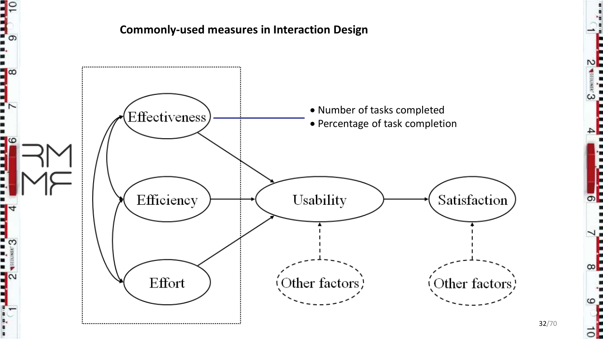
交互设计中常用的测量指标（measures）
- 完成的任务数量
- 任务完成百分比
英文检索原文（公式与版式请看左侧原图）
Commonly-used measures in Interaction Design Number of tasks completed Percentage of task completion 32/70

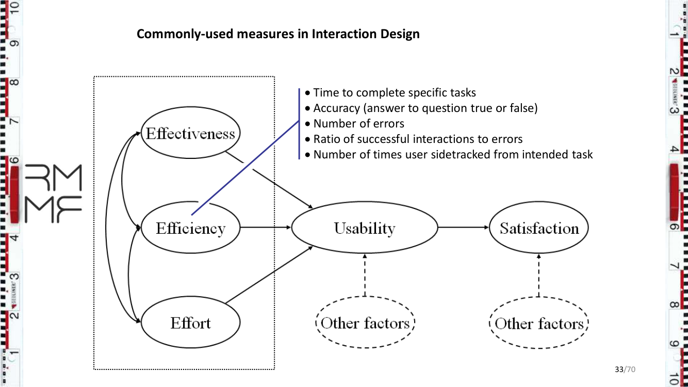
交互设计中常用的测量指标（measures）
- 完成特定任务的时间
- 准确度（Accuracy）（对问题的回答是真是假）
- 错误次数
- 成功交互与错误的比率（Ratio）
- 用户偏离预定任务的次数
英文检索原文（公式与版式请看左侧原图）
Commonly-used measures in Interaction Design Time to complete specific tasks Accuracy (answer to question true or false) Number of errors Ratio of successful interactions to errors Number of times user sidetracked from intended task 33/70

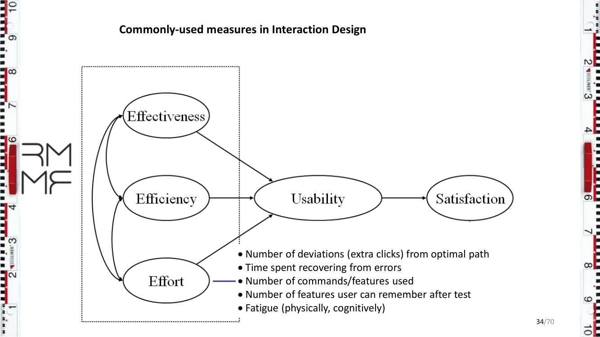
交互设计中常用的测量指标（measures）
- 偏离最优路径的次数（额外点击次数）
- 从错误中恢复所花费的时间
- 使用的命令／功能数量
- 用户在测试后能记住的功能数量
- 疲劳度（生理上、认知上）
英文检索原文（公式与版式请看左侧原图）
Commonly-used measures in Interaction Design Number of deviations (extra clicks) from optimal path Time spent recovering from errors Number of commands/features used Number of features user can remember after test Fatigue (physically, cognitively) 34/70

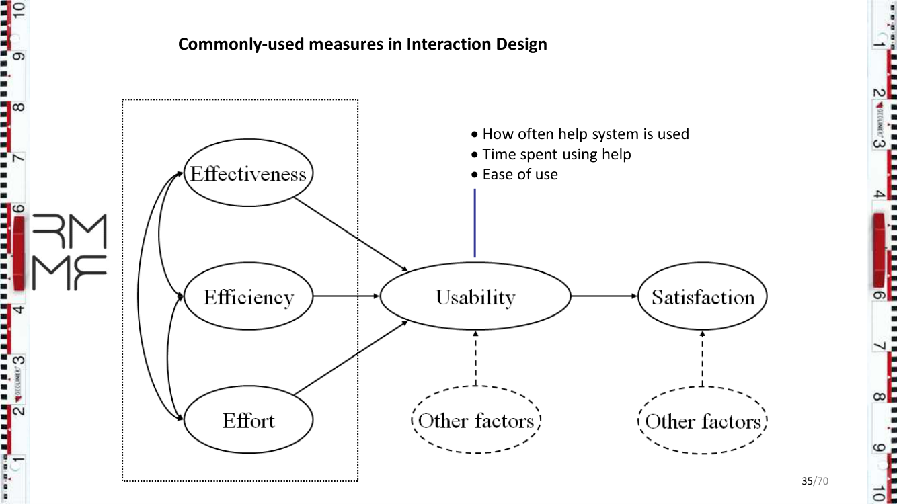
交互设计中常用的测量指标（measures）
- 帮助系统被使用的频率
- 使用帮助所花费的时间
- 易用性（Ease of use）
英文检索原文（公式与版式请看左侧原图）
Commonly-used measures in Interaction Design How often help system is used Time spent using help Ease of use 35/70

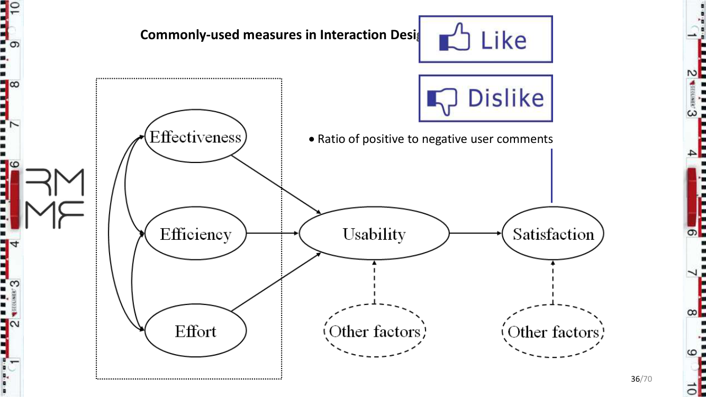
交互设计中常用的测量指标（measures）
- 用户正面评论与负面评论的比率（Ratio）
英文检索原文（公式与版式请看左侧原图）
Commonly-used measures in Interaction Design Ratio of positive to negative user comments 36/70

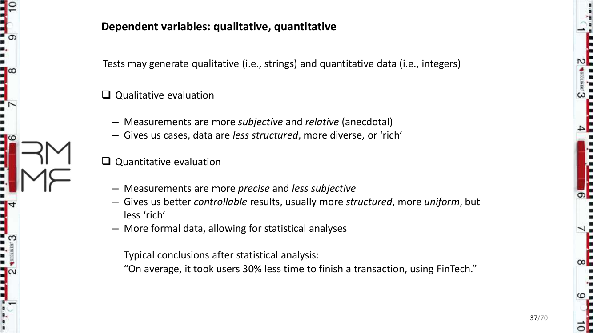
因变量（Dependent variables）：质性（qualitative）、定量（quantitative）
测试可能会生成质性（qualitative）（即字符串）和定量数据（quantitative data）（即整数）
- 质性评估（Qualitative evaluation）
- 测量（Measurements）更具主观性（subjective）和相对性（轶事性的（anecdotal））
- 为我们提供案例，数据结构化程度较低（less structured）、更加多样，或更「丰富」
- 定量评估（Quantitative evaluation）
- 测量（Measurements）更精确且较不具主观性（subjective）
- 为我们提供更易控制（controllable）的结果，通常更结构化（structured）、更统一，但没那么「丰富」
- 更形式化的数据，从而能够进行统计分析（statistical analyses）
统计分析（statistical analysis）后的典型结论：
「平均而言，使用 FinTech 完成一笔交易，用户花费的时间减少了 30%。」
英文检索原文（公式与版式请看左侧原图）
37/70 Dependent variables: qualitative, quantitative Tests may generate qualitative (i.e., strings) and quantitative data (i.e., integers) Qualitative evaluation – Measurements are more subjective and relative (anecdotal) – Gives us cases, data are less structured, more diverse, or ‘rich’ Quantitative evaluation – Measurements are more precise and less subjective – Gives us better controllable results, usually more structured, more uniform, but less ‘rich’ – More formal data, allowing for statistical analyses Typical conclusions after statistical analysis: “On average, it took users 30% less time to finish a transaction, using FinTech.”

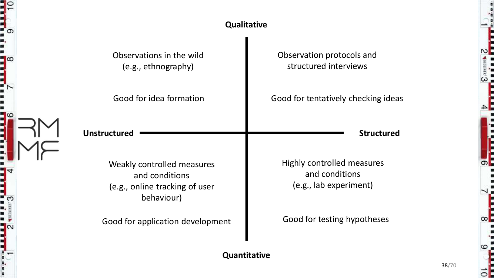
质性（Qualitative） / 定量（Quantitative） × 非结构化（Unstructured） / 结构化（Structured）
- 非结构化（Unstructured） × 质性（Qualitative）
- 自然情境下的观察（例如：民族志（ethnography））
- 适用于形成想法
- 非结构化（Unstructured） × 定量（Quantitative）
- 弱控制（controlled）的测量指标（measures）与条件（例如：用户行为的在线追踪）
- 适用于初步检验想法
- 结构化（Structured） × 质性（Qualitative）
- 观察记录规程（Observation protocols）与结构化访谈（structured interviews）
- 适用于应用开发
- 结构化（Structured） × 定量（Quantitative）
- 高度控制（controlled）的测量指标（measures）与条件（例如：实验室实验（lab experiment））
- 适用于检验假设（testing hypotheses）
英文检索原文（公式与版式请看左侧原图）
Qualitative Quantitative Unstructured Structured Observations in the wild (e.g., ethnography) Weakly controlled measures and conditions (e.g., online tracking of user behaviour) Observation protocols and structured interviews Good for application development Good for idea formation Good for tentatively checking ideas Highly controlled measures and conditions (e.g., lab experiment) Good for testing hypotheses 38/70

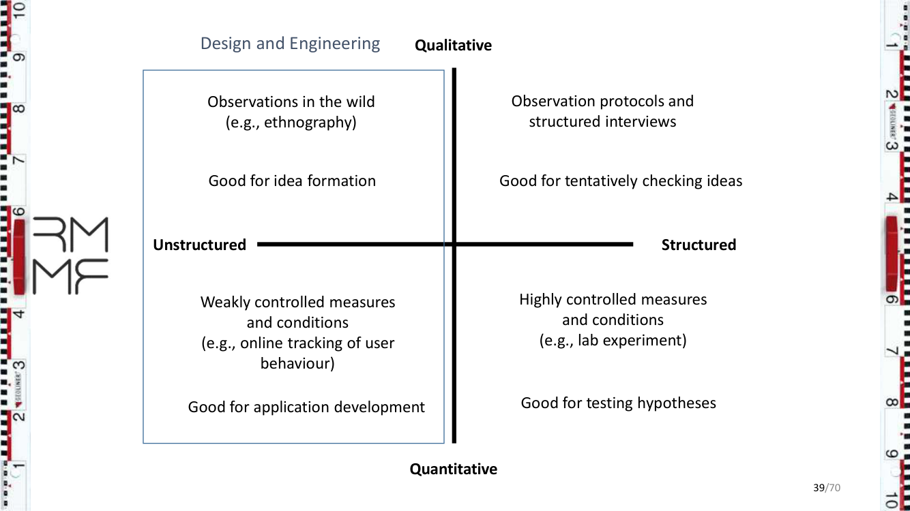
质性（Qualitative） / 定量（Quantitative） × 非结构化（Unstructured） / 结构化（Structured）
- 非结构化（Unstructured） × 质性（Qualitative）
- 自然情境下的观察（例如：民族志（ethnography））
- 适用于形成想法
- 非结构化（Unstructured） × 定量（Quantitative）
- 弱控制（controlled）的测量指标（measures）与条件（例如：用户行为的在线追踪）
- 适用于初步检验想法
- 结构化（Structured） × 质性（Qualitative）
- 观察记录规程（Observation protocols）与结构化访谈（structured interviews）
- 适用于应用开发
- 结构化（Structured） × 定量（Quantitative）
- 高度控制（controlled）的测量指标（measures）与条件（例如：实验室实验（lab experiment））
- 适用于检验假设（testing hypotheses）
设计与工程（Design and Engineering）
英文检索原文（公式与版式请看左侧原图）
Qualitative Quantitative Unstructured Structured Observations in the wild (e.g., ethnography) Weakly controlled measures and conditions (e.g., online tracking of user behaviour) Observation protocols and structured interviews Good for application development Good for idea formation Good for tentatively checking ideas Design and Engineering Highly controlled measures and conditions (e.g., lab experiment) Good for testing hypotheses 39/70

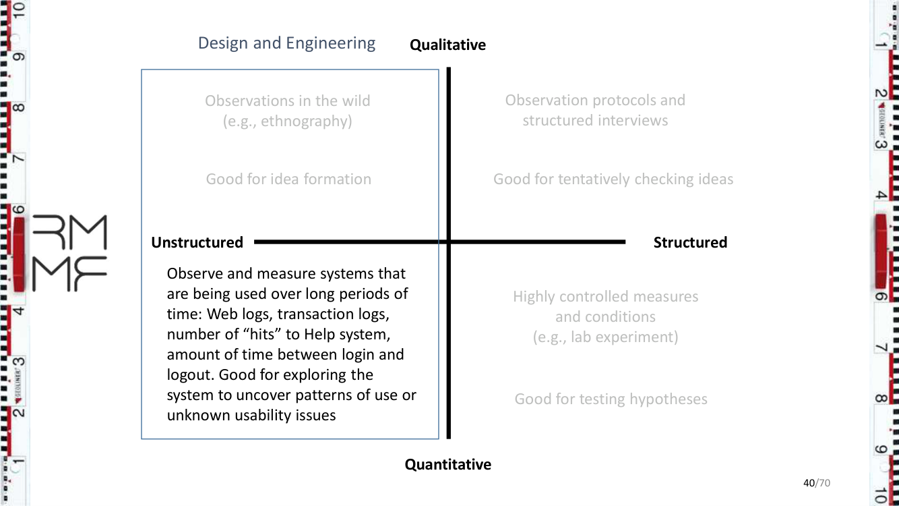
设计与工程（Design and Engineering）
- 质性（Qualitative）
- 量化（Quantitative）
- 非结构化（Unstructured）
- 结构化（Structured）
- 自然情境观察（Observations in the wild）（例如，民族志（ethnography））
- 适合构思形成
- 高度受控的测量（measures）与条件（例如，实验室实验（lab experiment））
- 适合检验假设（hypotheses）
- 观察方案（Observation protocols）与结构化访谈（structured interviews）
- 适合初步验证想法
- 观察并测量（measure）长期投入使用的系统：网页日志（Web logs）、交易日志（transaction logs）、帮助系统的「点击」次数、登录与登出之间的时长。适合探索系统以发现使用模式或未知的可用性（usability）问题
英文检索原文（公式与版式请看左侧原图）
Qualitative Quantitative Unstructured Structured Observations in the wild (e.g., ethnography) Highly controlled measures and conditions (e.g., lab experiment) Observation protocols and structured interviews Good for idea formation Good for testing hypotheses Good for tentatively checking ideas Observe and measure systems that are being used over long periods of time: Web logs, transaction logs, number of “hits” to Help system, amount of time between login and logout. Good for exploring the system to uncover patterns of use or unknown usability issues Design and Engineering 40/70

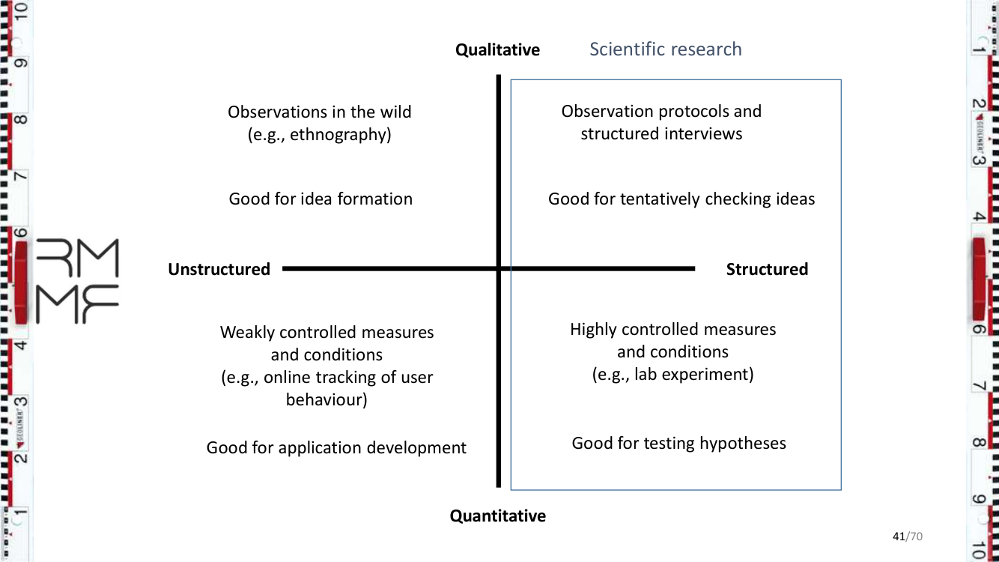
科学研究（Scientific research）
- 质性（Qualitative）
- 量化（Quantitative）
- 非结构化（Unstructured）
- 结构化（Structured）
- 自然情境观察（Observations in the wild）（例如，民族志（ethnography））
- 适合构思形成
- 高度受控的测量（measures）与条件（例如，实验室实验（lab experiment））
- 适合检验假设（hypotheses）
- 弱受控的测量（measures）与条件（例如，用户行为的在线追踪）
- 适合应用开发
- 观察方案（Observation protocols）与结构化访谈（structured interviews）
- 适合初步验证想法
英文检索原文（公式与版式请看左侧原图）
Qualitative Quantitative Unstructured Structured Observations in the wild (e.g., ethnography) Highly controlled measures and conditions (e.g., lab experiment) Weakly controlled measures and conditions (e.g., online tracking of user behaviour) Observation protocols and structured interviews Good for application development Good for idea formation Good for testing hypotheses Good for tentatively checking ideas Scientific research 41/70

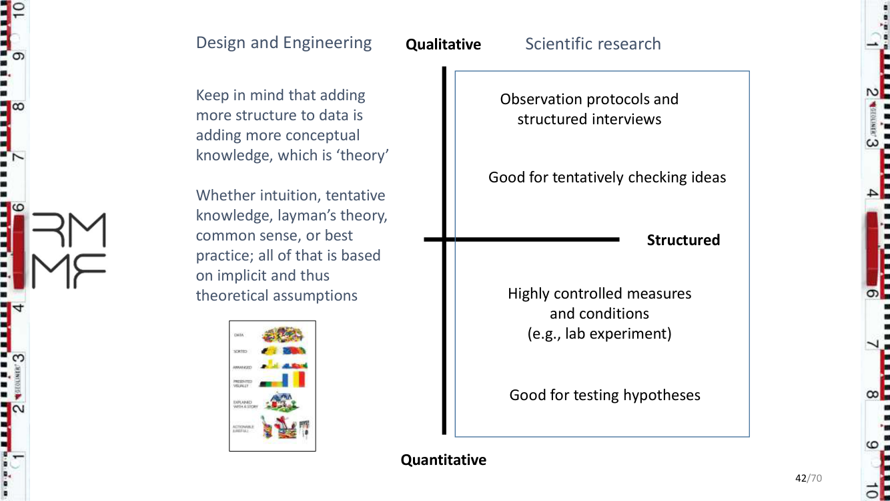
科学研究（Scientific research） ／ 设计与工程（Design and Engineering）
- 质性（Qualitative）
- 量化（Quantitative）
- 结构化（Structured）
- 高度受控的测量（measures）与条件（例如，实验室实验（lab experiment））
- 适合检验假设（hypotheses）
- 观察方案（Observation protocols）与结构化访谈（structured interviews）
- 适合初步验证想法
请记住：为数据（data）增添更多结构，就是增添更多概念性知识（conceptual knowledge），而这正是「理论（theory）」
无论是直觉、初步知识、外行理论（layman’s theory）、常识还是最佳实践，所有这些都建立在隐含的、因而是理论假设（theoretical assumptions）之上。
英文检索原文（公式与版式请看左侧原图）
Qualitative Quantitative Structured Highly controlled measures and conditions (e.g., lab experiment) Observation protocols and structured interviews Good for testing hypotheses Good for tentatively checking ideas Scientific research Design and Engineering Keep in mind that adding more structure to data is adding more conceptual knowledge, which is ‘theory’ Whether intuition, tentative knowledge, layman’s theory, common sense, or best practice; all of that is based on implicit and thus theoretical assumptions 42/70

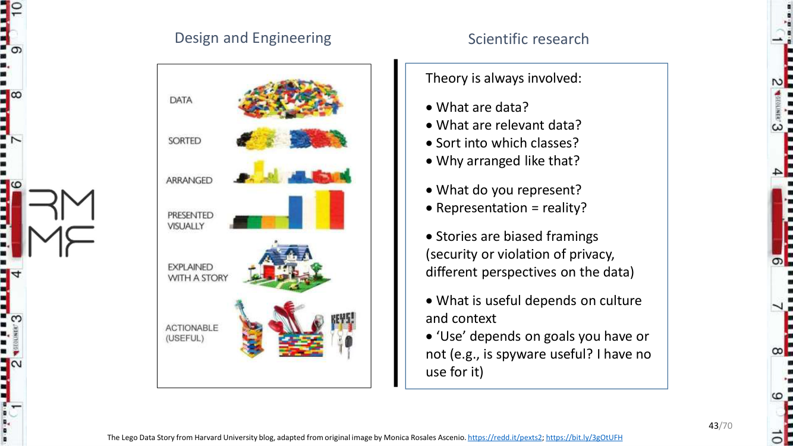
科学研究（Scientific research） ／ 设计与工程（Design and Engineering）
理论（Theory）总是参与其中：
- 什么是数据（data）？
- 什么是相关数据（relevant data）？
- 归入哪些类别（classes）？
- 为什么那样排列？
- 你表征（represent）了什么？
- 表征（Representation） = 现实？
- 叙事是带有偏见的框架建构（biased framings）（安全保障还是侵犯隐私，对数据（data）的不同视角）
- 什么是有用的取决于文化与情境
- 「用途」取决于你是否拥有某些目标（例如，间谍软件有用吗？对我来说没用）
资料来源：《乐高数据故事》（The Lego Data Story），引自哈佛大学博客，改编自 Monica Rosales Ascenio 原图。https://redd.it/pexts2 ; https://bit.ly/3gOtUFH
英文检索原文（公式与版式请看左侧原图）
Scientific research Design and Engineering The Lego Data Story from Harvard University blog, adapted from original image by Monica Rosales Ascenio. https://redd.it/pexts2; https://bit.ly/3gOtUFH Theory is always involved: What are data? What are relevant data? Sort into which classes? Why arranged like that? What do you represent? Representation = reality? Stories are biased framings (security or violation of privacy, different perspectives on the data) What is useful depends on culture and context ‘Use’ depends on goals you have or not (e.g., is spyware useful? I have no use for it) 43/70

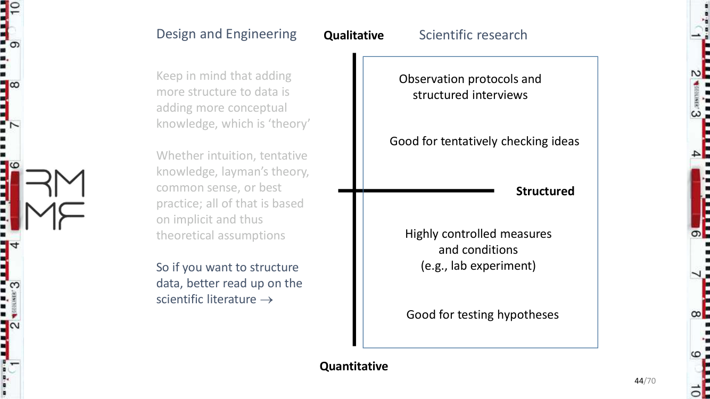
科学研究（Scientific research） ／ 设计与工程（Design and Engineering）
- 质性（Qualitative）
- 量化（Quantitative）
- 结构化（Structured）
- 高度受控的测量（measures）与条件（例如，实验室实验（lab experiment））
- 适合检验假设（hypotheses）
- 观察方案（Observation protocols）与结构化访谈（structured interviews）
- 适合初步验证想法
请记住：为数据（data）增添更多结构，就是增添更多概念性知识（conceptual knowledge），而这正是「理论（theory）」
无论是直觉、初步知识、外行理论（layman’s theory）、常识还是最佳实践，所有这些都建立在隐含的、因而是理论假设（theoretical assumptions）之上。
因此，如果你想将数据（data）结构化，最好先研读科学文献（scientific literature） →
英文检索原文（公式与版式请看左侧原图）
Qualitative Quantitative Structured Highly controlled measures and conditions (e.g., lab experiment) Observation protocols and structured interviews Good for testing hypotheses Good for tentatively checking ideas Scientific research Design and Engineering Keep in mind that adding more structure to data is adding more conceptual knowledge, which is ‘theory’ Whether intuition, tentative knowledge, layman’s theory, common sense, or best practice; all of that is based on implicit and thus theoretical assumptions So if you want to structure data, better read up on the scientific literature 44/70

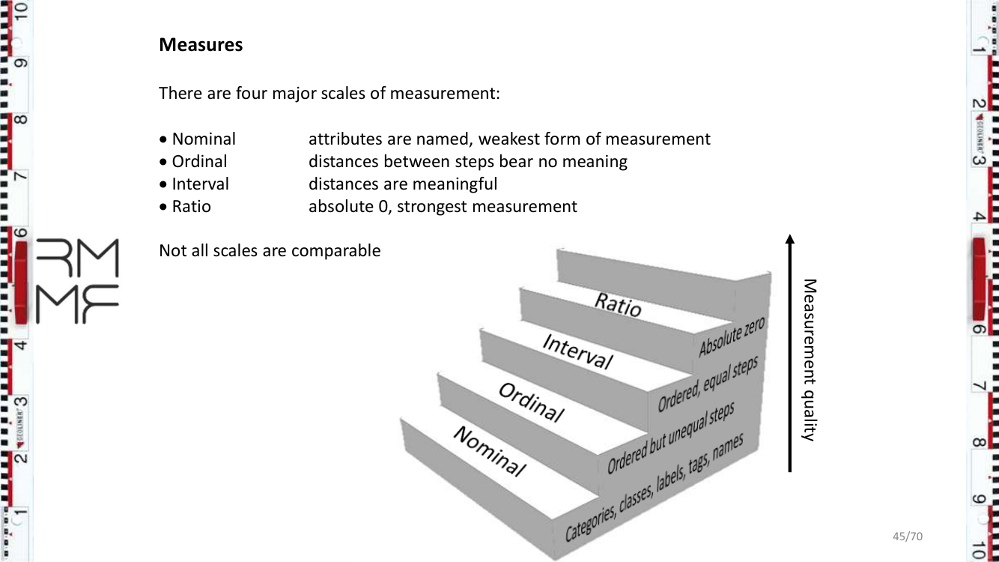
测量质量（Measurement quality）：测量（Measures）
有四种主要的测量尺度（scales of measurement）：
- 定类尺度（Nominal）
- 属性被命名，最弱的测量（measurement）形式
- 定序尺度（Ordinal）
- 等级之间的距离没有意义
- 定距尺度（Interval）
- 距离是有意义的
- 定比尺度（Ratio）
- 绝对零点（absolute 0），最强的测量（measurement）
并非所有尺度（scales）都具有可比性。
英文检索原文（公式与版式请看左侧原图）
45/70 There are four major scales of measurement: Nominal attributes are named, weakest form of measurement Ordinal distances between steps bear no meaning Interval distances are meaningful Ratio absolute 0, strongest measurement Not all scales are comparable Measures Measurement quality

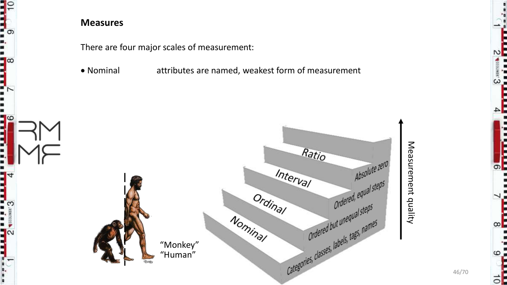
测量质量（Measurement quality）：测量（Measures）
有四种主要的测量尺度（scales of measurement）：
- 定类尺度（Nominal）
- 属性被命名，最弱的测量（measurement）形式
- 「猴子」（“Monkey”）
- 「人类」（“Human”）
英文检索原文（公式与版式请看左侧原图）
46/70 “Monkey” “Human” There are four major scales of measurement: Nominal attributes are named, weakest form of measurement Measures Measurement quality

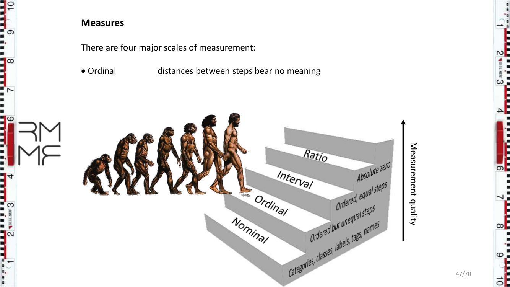
测量质量（Measurement quality）：测量（Measures）
有四种主要的测量尺度（scales of measurement）：
- 定序尺度（Ordinal）
- 等级之间的距离没有意义
英文检索原文（公式与版式请看左侧原图）
47/70 There are four major scales of measurement: Ordinal distances between steps bear no meaning Measures Measurement quality

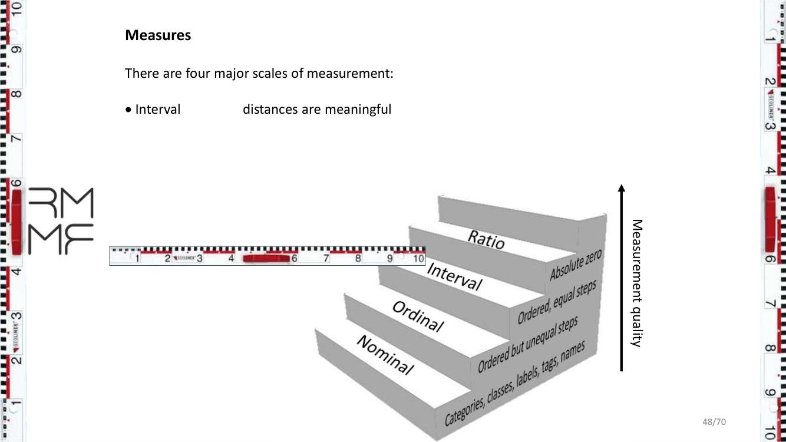
测量质量（Measurement quality）：测量（Measures）
有四种主要的测量尺度（scales of measurement）：
- 定距尺度（Interval）
- 距离是有意义的
英文检索原文（公式与版式请看左侧原图）
48/70 There are four major scales of measurement: Interval distances are meaningful Measures Measurement quality

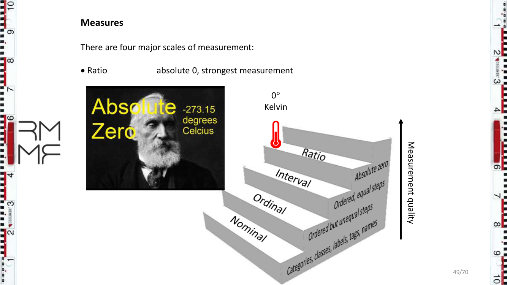
测量质量（Measurement quality）：测量（Measures）
有四种主要的测量尺度（scales of measurement）：
- 定比尺度（Ratio）
- 绝对零点（absolute 0），最强的测量（measurement）
- 0 开尔文（0 Kelvin）
英文检索原文（公式与版式请看左侧原图）
49/70 0 Kelvin There are four major scales of measurement: Ratio absolute 0, strongest measurement Measures Measurement quality

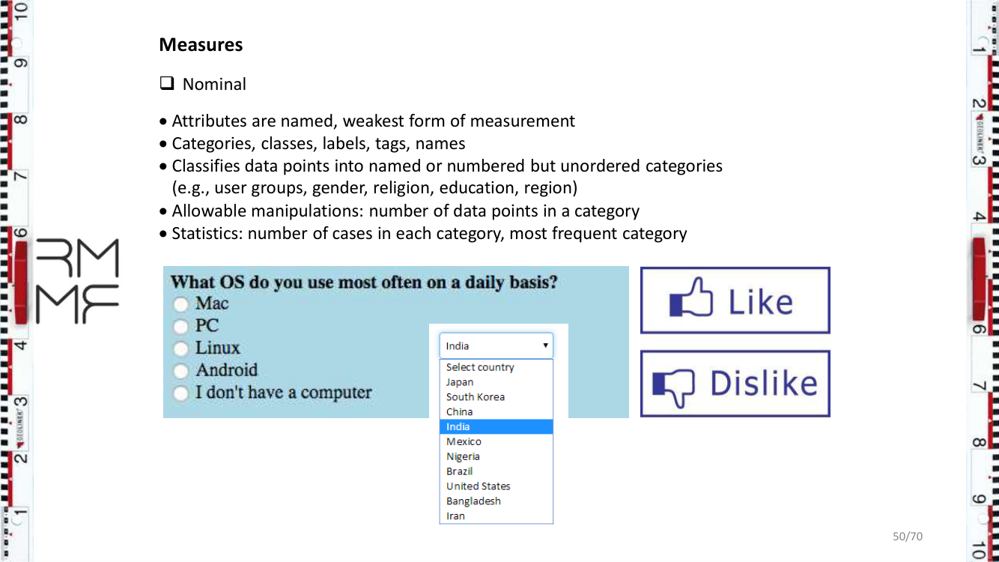
测量（Measures）
- 定类尺度（Nominal）
- 属性被命名，最弱的测量（measurement）形式
- 类别（Categories）、分类（classes）、标签（labels）、标记（tags）、名称（names）
- 将数据点（data points）归入已命名或编号但无序的类别（unordered categories）（例如：用户群、性别、宗教、教育程度、地区）
- 允许的操作（Allowable manipulations）：某个类别中数据点（data points）的数量
- 统计量（Statistics）：每个类别中的个案数（number of cases in each category）、出现最频繁的类别
英文检索原文（公式与版式请看左侧原图）
50/70 Nominal Attributes are named, weakest form of measurement Categories, classes, labels, tags, names Classifies data points into named or numbered but unordered categories (e.g., user groups, gender, religion, education, region) Allowable manipulations: number of data points in a category Statistics: number of cases in each category, most frequent category Measures

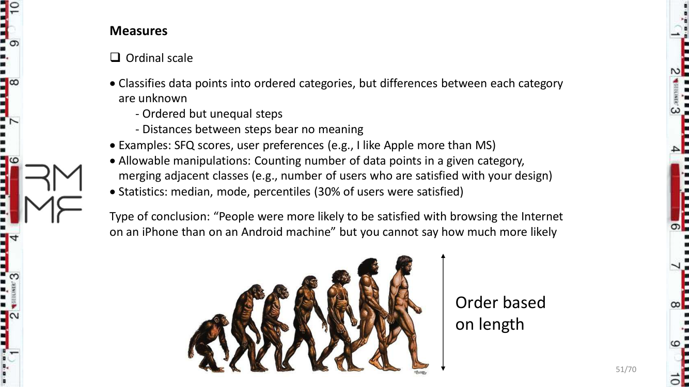
测量（Measures）
- 定序尺度（Ordinal scale）
- 将数据点（data points）划分为有序类别（ordered categories），但各类别之间的差异是未知的
- 有序但步长不等（Ordered but unequal steps）
- 等级之间的距离没有意义
- 示例：SFQ 得分（SFQ scores）、用户偏好（例如：我喜欢 Apple 胜过 MS）
- 允许的操作（Allowable manipulations）：统计某一给定类别中的数据点（data points）数量，合并相邻类别（例如：对你的设计感到满意的用户数量）
- 统计量（Statistics）：中位数（median）、众数（mode）、百分位数（percentiles）（30% 的用户感到满意）
结论类型：「人们在 iPhone 上浏览互联网比在 Android 设备上更有可能感到满意」，但你无法说出可能性高出多少。
按长度排序（Order based on length）
英文检索原文（公式与版式请看左侧原图）
51/70 Ordinal scale Classifies data points into ordered categories, but differences between each category are unknown - Ordered but unequal steps - Distances between steps bear no meaning Examples: SFQ scores, user preferences (e.g., I like Apple more than MS) Allowable manipulations: Counting number of data points in a given category, merging adjacent classes (e.g., number of users who are satisfied with your design) Statistics: median, mode, percentiles (30% of users were satisfied) Type of conclusion: “People were more likely to be satisfied with browsing the Internet on an iPhone than on an Android machine” but you cannot say how much more likely Measures Order based on length

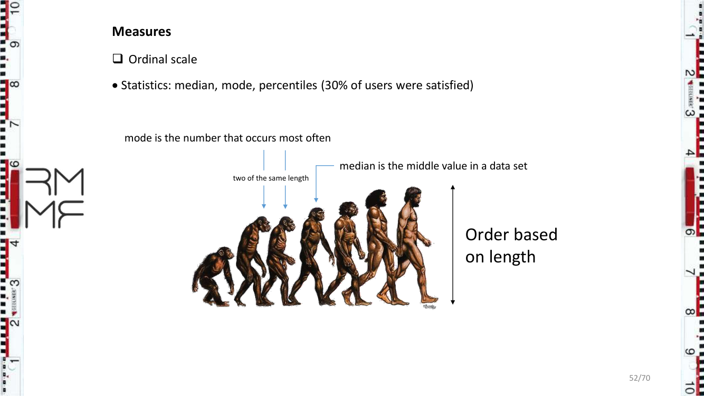
测量（Measures）
- 定序尺度（Ordinal scale）
- 统计量（Statistics）：中位数（median）、众数（mode）、百分位数（percentiles）（30% 的用户感到满意）
按长度排序（Order based on length）
- 中位数（median）是数据集（data set）中的中间值
- 众数（mode）是出现次数最多的数值
- 两个长度相同（two of the same length）
英文检索原文（公式与版式请看左侧原图）
52/70 Ordinal scale Statistics: median, mode, percentiles (30% of users were satisfied) Measures Order based on length median is the middle value in a data set mode is the number that occurs most often two of the same length

测量（Measures）
- 定序尺度（Ordinal scale）
- 统计量（Statistics）：中位数（median）、众数（mode）、百分位数（percentiles）（30% 的用户感到满意）
按长度排序（Order based on length）
- 百分位数（percentiles）描述数据集（data set）中各分数之间的比较关系
英文检索原文（公式与版式请看左侧原图）
53/70 Order based on length Ordinal scale Statistics: median, mode, percentiles (30% of users were satisfied) Measures percentiles describe how scores in a data set compare

测量（Measures）
- 等距量表（Interval scale）
- 与比率量表（Ratio scale）类似，但「零点（“zero” point）」是任意设定的
- 有序且具有等距步长（equal steps）（距离是有意义的）
- 允许的运算（Allowable manipulations）：加、减
- 有时，比率（ratios）（乘、除）可能没有意义
- 允许的统计量（statistics）：均值（mean）、全距（range）、方差（variance）、标准差（standard deviation）
例子：信用评分。介于 300 到 850 之间的三位数（零点在哪里？），用于表示信用风险，或某人按时支付账单的可能性
（注释） 仍可能带有某些顺序量表（ordinal）特征
英文检索原文（公式与版式请看左侧原图）
54/70 Interval scale Similar to Ratio scale, but the “zero” point is arbitrary Ordered but with equal steps (distances are meaningful) Allowable manipulations: add, subtract - Sometimes, ratios (multiply, divide) may not be meaningful Allowable statistics: mean, range, variance, standard deviation Measures Example: A credit score. Three-digit number between 300 and 850 (where’s the zero?), indicating credit risk, or the likelihood someone pays their bills May still carry some ordinal aspects

测量（Measures）
0（完全不同意）—— 1（不同意）—— 2（有点不同意）—— 3（有点同意）—— 4（同意）—— 5（完全同意）
严格来说，评定量表（rating-scale）的标签属于顺序水平（ordinal），但在统计学上可以按等距水平（interval level）来处理
- 等距量表（Interval scale）
- 与比率量表（Ratio scale）类似，但「零点（“zero” point）」是任意设定的
- 有序且具有等距步长（equal steps）（距离是有意义的）
- 允许的运算：加、减
- 有时，比率（ratios）（乘、除）可能没有意义
- 允许的统计量（statistics）：均值（mean）、全距（range）、方差（variance）、标准差（standard deviation）
英文检索原文（公式与版式请看左侧原图）
55/70 completely disagree disagree agree agree completely disagree a little a little agree 0 -------------- 1 -------------- 2 -------------- 3 -------------- 4--------------5 Strictly speaking, rating-scale labels are ordinal but statistically can be treated at interval level Interval scale Similar to Ratio scale, but the “zero” point is arbitrary Ordered but with equal steps (distances are meaningful) Allowable manipulations: add, subtract - Sometimes, ratios (multiply, divide) may not be meaningful Allowable statistics: mean, range, variance, standard deviation Measures

测量（Measures）
- 等距量表（Interval scale）
- 允许的统计量（statistics）：均值（mean）、全距（range）、方差（variance）、标准差（standard deviation）
均值（The mean）（平均分，average score）：所有数值之和除以数值的个数
全距（Range）：最高分与最低分之间的差值
在 {3, 5, 6, 8} 中，全距（range） = 8 – 3 = 5
（图表标注） 0 — 3 — 8 — 10；均值（Mean）（平均数）；全距（range）
英文检索原文（公式与版式请看左侧原图）
Interval scale
Allowable statistics: mean, range, variance, standard deviation
Measures
The mean (average score): The sum of all values divided by the number of values
Range: difference between the highest and lowest scores
In {3, 5, 6, 8}, range = 8 – 3 = 5
3
8
0
10
Mean (average)
range
56/70

测量（Measures）
- 等距量表（Interval scale）
- 允许的统计量（statistics）：均值（mean）、全距（range）、方差（variance）、标准差（standard deviation）
方差（Variance）：每个分数与均值（mean）之间有多大差异，从而反映其与数据集中其他所有数值的差异程度
标准差（Standard Deviation, SD）：说明一组数据点相对于均值（mean）的分布情况，表示为「方差（variance）的平方根」
- 尖峰分布（Peaked distribution）
- 方差（variance）小，离散程度（spread）小
- 标准差（SD） 小于 1
- 正态分布（Normal distribution）
- 正常方差（variance）
- 标准差（SD） 约为 1
- 平阔分布（Flat distribution）
- 方差（variance）大，离散程度（spread）大
- 标准差（SD） 大于 1
（图表标注） 均值（Mean）
英文检索原文（公式与版式请看左侧原图）
57/70 Interval scale Allowable statistics: mean, range, variance, standard deviation Measures Variance: How much each score is different from the mean and thus from every other value in the data set Standard Deviation (SD): Tells the distribution of a set of data points in relation to the mean value, expressed as ‘the square root of the variance’ Peaked distribution Little variance, little spread SD smaller than 1 Normal distribution Normal variance SD around 1 Flat distribution Large variance, large spread SD greater than 1 Mean

测量（Measures）
- 比率量表（Ratio scale）
- 绝对零点（Absolute non-arbitrary zero）（绝对的、非任意的零点），最强程度的测量
- 将数据点划分为有序类别
- 类别／步长之间的差值相等
- 允许的运算：加、减、乘、除
- 允许的统计量（statistics）：均值（mean）、全距（range）、方差（variance）、标准差（standard deviation）
例子：所用时间（秒表）、重量、温度（开尔文温标，in Kelvin）
结论类型：「人们在 iPhone 键盘上输入短信所花的时间，与使用 Samsung 键盘时一样多，甚至更多」
「平均而言，人们在体育网站上的点击次数与在保险网站上一样多，甚至更多」
（图表标注） 在这个位置，绝对零点（absolute zero）
英文检索原文（公式与版式请看左侧原图）
58/70 Ratio scale Absolute non-arbitrary zero, strongest measurement Classifies data points into ordered categories Equal differences between categories / steps Allowable manipulations: add, subtract, multiply, divide Allowable statistics: mean, range, variance, standard deviation Examples: time taken (stopwatch), weight, temperature (in Kelvin) Type of conclusions: “People use as much or even more time to enter in text messages on an iPhone keyboard than when they use a Samsung keyboard” “On average, people make as many or even more clicks on sports websites as compared to insurance websites” Measures At this point, absolute zero

测量（Measures）与问题
- 不必要地降低测量质量（measurement quality）
- 高分辨率可以确定地降级为低分辨率
- 低分辨率永远无法确定地升级为高分辨率
- 缺失数据（Missing data）——即你未曾测量的数据——可以被估计（estimated），但无法被确知
（图示标注） 比率量表（Ratio scale） ⇄ 顺序量表（Ordinal scale）：可降级（down-gradable）／不可升级（not upgradable）
英文检索原文（公式与版式请看左侧原图）
59/70 Unnecessary downgrading of measurement quality High resolution can be degraded to low resolution with certainty Low resolution can never be upgraded to higher resolution with certainty Missing data, data you did not measure, can be estimated, they cannot be known Measures, issues Ratio scale Ordinal scale down-gradable not upgradable

测量（Measures）与问题
- 不必要地降低测量质量（measurement quality）
- 高分辨率可以确定地降级为低分辨率
- 低分辨率永远无法确定地恢复为高分辨率
- 缺失数据（Missing data）——即你未曾测量的数据——可以被估计（estimated），但无法被确知
（图示标注） 名义量表（Nominal） / 现在（now） / 等距量表（Interval）
英文检索原文（公式与版式请看左侧原图）
60/70 Unnecessary downgrading of measurement quality High resolution can be degraded to low resolution with certainty Low resolution can never be restored to high resolution with certainty Missing data, data you did not measure, can be estimated, they cannot be known Measures, issues Nominal now Interval

测量（Measures）与问题
- 不必要地降低测量质量（measurement quality）
- 用较弱的分析形式（例如百分比）浪费了等距量表（Interval scales），把量表数值 1、2、3、4 等当作带有分数频数（frequencies）的类别，而不是去计算均分（mean scores）！！
15 人得 1 分，5 人得 2 分
= 15 × 1 + 5 × 2 = 25/20 = 1.25
参考文献（References）
- Damian, D., Zowghi, D., Vaidyanathasamy, L. and Pal, Y. An industrial case study of immediate benefits of requirements engineering process improvement at the Australian Center for Unisys Software. Empirical Software Engineering, 9(1-2), pp.45-75, 2004
英文检索原文（公式与版式请看左侧原图）
Damian, D., Zowghi, D., Vaidyanathasamy, L. and Pal, Y. An industrial case study of immediate benefits of requirements engineering process improvement at the Australian Center for Unisys Software. Empirical Software Engineering, 9(1-2), pp.45-75, 2004 Unnecessary downgrading of measurement quality Interval scales wasted by weak forms of analysis (e.g., percentages), using the scale values 1, 2, 3, 4, etc. as classes with score frequencies rather than calculating the mean scores!! 15 people scored 1 and 5 people scored 2 = 15 1 + 5 2 = 25/20 = 1.25 Measures, issues 61/70

测量（Measures）与问题
- 神经网络（Neural Networks）中的激活函数（Activation functions）可能会降低测量质量（measurement quality）！
- 分类器（Classifiers）将一个数据集（data set）划分为两组或多组。通过划分，中间数值会丢失
（图表标注）
- 更偏向类内（in-class）方向
- 更偏向类外（out-of-class）方向
- ……细微差别丢失了
- 因此，发生了从等距量表（interval scale）到名义量表（nominal）的降级……
- 超平面（hyperplane）
- 为了进行划分而向上调整了偏置（截距）（Bias (intercept)），尽管回归线（regression line）表明存在一个连续体（continuum）
英文检索原文（公式与版式请看左侧原图）
62/70 Measures, issues Activation functions in Neural Networks may reduce measurement quality! Classifiers split a data set in two or more groups. By splitting, intermediate values are lost More into the in-class direction More into the out-of-class direction …nuance is lost Thus, a reduction occurs from interval scale to nominal… hyperplane Bias (intercept) adapted upward to make the split although regression line tells there is a continuum

测量（Measures）与问题
- 神经网络（Neural Networks）中的分类器（Classifiers）可能会降低测量质量（measurement quality）！
（图表标注） 这可能会导致痛苦的错误（Which may lead to painful mistakes）
英文检索原文（公式与版式请看左侧原图）
63/70 Classifiers in Neural Networks may reduce measurement quality! Measures, issues Which may lead to painful mistakes

测量（Measures）
- 总而言之（In sum）
| 量表（Scale） | 名义量表（Nominal） | 顺序量表（Ordinal） | 等距量表（Interval） | 比率量表（Ratio） |
|---|---|---|---|---|
| 频数分布（Frequency distribution） | 是（Yes） | 是（Yes） | 是（Yes） | 是（Yes） |
| 中位数（Median）、众数（mode）、百分位数（percentiles） | 否（No） | 是（Yes） | 是（Yes） | 是（Yes） |
| 加、减（Add, subtract） | 否（No） | 否（No） | 是（Yes） | 是（Yes） |
| 均值（Mean）、全距（range）、方差（variance）、标准差（standard deviation） | 否（No） | 否（No） | 是（Yes） | 是（Yes） |
| 比率（Ratios）、变异系数（coefficient of variation） | 否（No） | 否（No） | 否（No） | 是（Yes） |
英文检索原文（公式与版式请看左侧原图）
In sum Measures Scale Nominal Ordinal Interval Ratio Frequency Yes Yes Yes Yes distribution Median, mode, No Yes Yes Yes percentiles Add, subtract No No Yes Yes Mean, range, No No Yes Yes variance, standard deviation Ratios, No No No Yes coefficient of variation 64/70

总结（∑ummary）
Socrates
- 理论决定方法（Theory determines the method）
- 一个精确的研究问题（RQ）会指引你走完整个研究过程，因为你会被自己遇到的诸多细节以及自身存在的偏差（biases）所干扰
- 研究的四个象限（The four quadrants of research）帮助你确定你需要做或正在做哪种研究：更偏向抽象还是具体，干预性（obtrusive）还是非干预性（unobtrusive）
- 工作现场的民族志观察（Ethnographical observations）是非干预性（unobtrusive）且具体的，人们不会注意到你在研究他们，但个案是单一的，且数据属于轶事性数据（anecdotal）。实验室实验（Lab experiments）是干预性（obtrusive）的，因此人们可能会因你的观察而产生偏差（biased），但个案数量众多，且可以进行统计学分析（analysed statistically）
英文检索原文（公式与版式请看左侧原图）
65/70 ummary Socrates Theory determines the method A precise RQ guides you through the entire research process, because you will be distracted by the many details you encounter and biases you have The four quadrants of research help you determine what kind of study you need or are doing: more abstract or concrete, obtrusive or unobtrusive Ethnographical observations on the work floor are unobtrusive and concrete, people will not notice you study them but cases are singular and data are anecdotal. Lab experiments are obtrusive and so people may be biased by you observing them but cases are numerous and can be analysed statistically

总结（∑ummary）
Socrates
- 质性测试（Qualitative tests）生成非数值数据（non-numerical data）（例如视频、使用故事），为你提供关于特定个案的具体洞见。量化测试（Quantitative tests）是数值型（numerical）的（例如速度、准确率），并且可以泛化（generalised）到多个个案上
- 你必须始终从提出一个研究问题（Research Question）开始，并从中推导出假设（Hypotheses）
- 只有到这一步，你才能进入方法部分，确定你将要测量的内容
- 行为测量（Behavioural）：问卷（Questionnaires）、眼动追踪（eye-tracking）、反应时（RT）
- 生理测量（Physiological）：心电图（ECG）、脑电图（EEG）、功能性磁共振成像（fMRI）、皮肤电反应（Galvanic skin response）
- 零假设（The Null）预测两组数据之间没有明显差异（例如使用 Mac 与使用 PC）：效应在统计上不显著（statistically not significant）。备择假设（The Alternative）则预测存在差异：该差异显著且超出合理怀疑
英文检索原文（公式与版式请看左侧原图）
66/70 ummary Socrates Qualitative tests generate non-numerical data (e.g., videos, use stories), which give you specific insights into your particular case. Quantitative tests are numerical (e.g., speed, accuracy) and may be generalised over multiple cases You must always start from formulating a Research Question and derive Hypotheses from it Only now can you go into method, determining what you will measure Behavioural: Questionnaires, eye-tracking, RT Physiological: ECG, EEG, fMRI, Galvanic skin response The Null predicts there is no noticeable difference between two sets of data (e.g., Mac vs PC use): effects are statistically not significant. The Alternative does predict a difference: the difference is significant beyond reasonable doubt

总结（∑ummary）
Socrates
- 测量质量（Measurement quality）。有四种主要的测量量表（scales of measurement），你必须全部掌握：
- 名义量表（Nominal）：类别（classes）
- 顺序量表（Ordinal）：不等距步长（unequal steps）
- 等距量表（Interval）：等距步长，无真实零点（equal steps, no real zero）
- 比率量表（Ratio）：等距步长，绝对零点（equal steps, absolute zero）
- 并非所有量表都是可比的，将比率水平（ratio）或等距水平（interval level）降维归类为名义分类（nominal categorisation）是……令人遗憾的
英文检索原文（公式与版式请看左侧原图）
ummary 67/70 Socrates Measurement quality. There are four major scales of measurement and you have to know them all: Nominal classes Ordinal unequal steps Interval equal steps, no real zero Ratio equal steps, absolute zero Not all scales are comparable and reducing ratio or interval level to a nominal categorisation is… unfortunate

考试样题（Exam Sample Item）
- 问题
- 文献（Literature）
- 研究问题（Research Question, RQ）
- 论证（Argumentation）（基于文献（literature））
- 假设（Hypotheses）（预测结果（predicted outcomes））
类别：「应用」（Category “Application”）
- 我们已经了解了如何建构理论（build up a theory）
更高的精确度（precision）
那么，为什么这不算一个研究问题（Research Question）？→
A. 论证（argumentation）结构为从属型（subordinative），因此论证力较弱
B. 研究问题（RQ）应当具有普遍关注价值，而该问题过于具体，不能算作研究问题（RQ）
C. 模糊的概念（concepts）：哪一种 AI、什么是「心智」、何种战斗、何时才算获胜？
D. 要检验一个假设（hypothesis），需要有比较（comparison），而此处缺失了比较
英文检索原文（公式与版式请看左侧原图）
●Question ●Literature ●Research Question (RQ) ●Argumentation (based on literature) ●Hypotheses (predicted outcomes) 68/70 Exam Sample Item A The argumentation structure is subordinative and therefore weak B An RQ should be of general interest, this is too specific to count as RQ C Vague concepts: Which AI, what is ‘mind,’ what kind of combat, when is it won? D To test a hypothesis, a comparison is needed, which is missing Category “Application” We have seen how to build up a theory more precision Then why is this not a Research Question?

考试样题（Exam Sample Item）
- 问题
- 文献（Literature）
- 研究问题（Research Question, RQ）
- 论证（Argumentation）（基于文献（literature））
- 假设（Hypotheses）（预测结果（predicted outcomes））
类别：「应用」（Category “Application”）
- 我们已经了解了如何建构理论（build up a theory）
更高的精确度（precision）
那么，为什么这不算一个研究问题（Research Question）？→
A. 论证（argumentation）结构为从属型（subordinative），因此论证力较弱
B. 研究问题（RQ）应当具有普遍关注价值，而该问题过于具体，不能算作研究问题（RQ）
C. 模糊的概念（concepts）：哪一种 AI、什么是「心智」、何种战斗、何时才算获胜？
D. 要检验一个假设（hypothesis），需要有比较（comparison），而此处缺失了比较
英文检索原文（公式与版式请看左侧原图）
●Question ●Literature ●Research Question (RQ) ●Argumentation (based on literature) ●Hypotheses (predicted outcomes) 69/70 Exam Sample Item A The argumentation structure is subordinative and therefore weak B An RQ should be of general interest, this is too specific to count as RQ C Vague concepts: Which AI, what is ‘mind,’ what kind of combat, when is it won? D To test a hypothesis, a comparison is needed, which is missing Category “Application” We have seen how to build up a theory more precision Then why is this not a Research Question?

参考文献（References）
- Hoorn, J. F. (2014). Stakeholder logistics of an interactive system. Journal of Systems and Software, 95, 52-69. doi: 10.1016/j.jss.2013.11.1095
- McGrath, J. E. (1995). Methodology matters: Doing research in the behavioral and social sciences. In R. M. Baecker, et al. (Eds.), Readings in Human–Computer Interaction (pp. 152-169). Morgan Kaufmann.
英文检索原文（公式与版式请看左侧原图）
References Hoorn, J. F. (2014). Stakeholder logistics of an interactive system. Journal of Systems and Software, 95, 52-69. doi: 10.1016/j.jss.2013.11.1095 McGrath, J. E. (1995). Methodology matters: Doing research in the behavioral and social sciences. In R. M. Baecker, et al. (Eds.), Readings in Human–Computer Interaction (pp. 152- 169). Morgan Kaufmann.